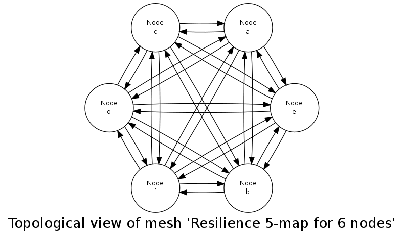
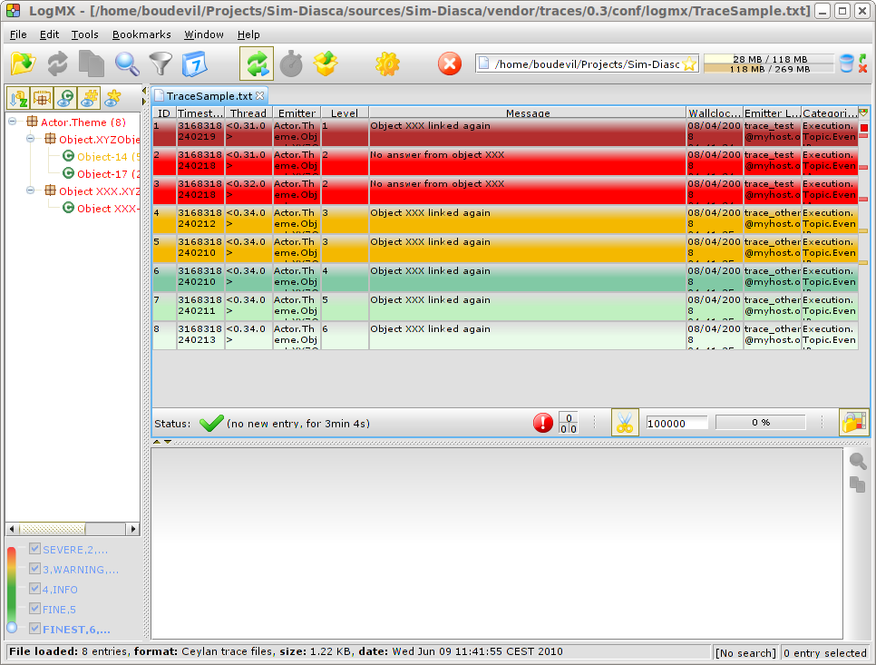

Sim-Diasca stands for Simulation of Discrete Systems of All Scales.
Sim-Diasca is a lightweight simulation platform, released by EDF R&D under the GNU LGPL licence, offering a set of simulation elements, including notably a simulation engine, to be applied to the simulation of discrete event-based systems made of potentially very numerous interacting parts.
This class of simulation encompasses a wide range of target systems, from ecosystems to information systems, i.e. it could be used for most applications in the so-called Complex systems scientific field.
Before entering in the details of the present manual, we recommend the reader to go first through the Sim-Diasca general-purpose presentation in order to benefit from a general overview.
As a matter of fact, a classical use case for Sim-Diasca is the simulation of industrial distributed systems federating a large number of networked devices.
The simulation elements provided by Sim-Diasca are mainly base models and technical components.
Models are designed to reproduce key behavioural traits of various elements of the system, notably business-specific objects, regarding a specific concern, i.e. a matter on which the simulator must provide an answer. An instance of a model is called here an actor. A simulation involves actors to be driven by a specific scenario implemented thanks to a simulation case.
Sim-Diasca includes built-in base models that can be further specialized to implement the actual business objects that are to be simulated.
Technical components allow the simulator to operate on models, so that their state and behaviour can be evaluated appropriately, in the context of the execution of an actual simulation.
Depending on the conventions that models and technical components respect, different properties of the simulation can be expected.
Thus the first question addressed in the context of Sim-Diasca has been the specification of the simulation needs that should be covered, i.e. its functional requirements.
Then, from these requirements, a relevant set of technical measures has been determined and then implemented.
Sim-Diasca and the first simulators making use of it are works in progress since the beginning of 2008, and the efforts dedicated to them remained light yet steady.
The Sim-Diasca engine is already fully functional on GNU/Linux platforms, and provides all the needed basic underlying simulation mechanisms to model and run full simulations on various hardware solutions.
A set of models, specifically tied to the first two business projects making use of Sim-Diasca, have been developed successfully on top of it, and the corresponding business results were delivered appropriately to stakeholders.
Some further enhancements to the Sim-Diasca engine are to be implemented (see Sim-Diasca Future Enhancements).
For the fearless users wanting an early glance at Sim-Diasca in action, here is the shortest path to testing, provided you already have the prerequisites (including a well-compiled, recent, Erlang interpreter on a GNU/Linux box) installed.
First, download the latest stable archive, for example: Sim-Diasca-x.y.z.tar.bz2.
Extract it: tar xvjf Sim-Diasca-x.y.z.tar.bz2.
Build it: cd Sim-Diasca-x.y.z && make all.
Select your test case: cd sim-diasca/src/core/src/scheduling/tests/, for example: scheduling_multiple_coupled_erratic_actors_test.erl.
Optionally, if you want to run a distributed simulation, create in the current directory a file named sim-diasca-host-candidates.txt which lists the computing hosts you want to take part to the simulation, with one entry by line, like (do not forget the final dot on each line):
{'hurricane.foobar.org', "Computer of John (this is free text)."}.
Then run the test case:
make scheduling_multiple_coupled_erratic_actors_run CMD_LINE_OPT="--batch"
The CMD_LINE_OPT="--batch" option was added as, for the sake of this quick-start, the trace supervisor is not expected to have already been installed.
For the more in-depth reference installation instructions, refer to the Sim-Diasca Installation Guide.

Note
Only some basic, general considerations about modelling are given here. To focus on the actual modelling that shall be operated in practice with the engine, one should refer to the Sim-Diasca Modeller Guide.
Depending on the question one is asking about the target system (ex: "What is the mean duration of that service request?") or on the properties that one wants to evaluate (ex: robustness, availability, cost, etc.), metrics (a.k.a. system observables), which are often macroscopic, system-wide, have to be defined. For example: round-trip time elapsed for a service request, or yearly total operational cost for the GPRS infrastructure.
These specific metrics will have to be computed and monitored appropriately during the corresponding simulations.
To do so, the behaviour of the elements of the system that have an impact on these values must be reproduced. For example, when evaluating a distributed information system, business-specific elements like devices, network components, etc. must be taken into account.
The simulator will manage all these elements based on simplified representations of them (models), selected to be relevant for the behavioural traits which matter for the question being studied.
Therefore the choice of the elements to take into account will depend on the selected metrics: if for example one is only interested in the volume of data exchanged in nominal state, deployment policies or failures of some devices might not be relevant there. On the contrary, evaluating reliability may not require to go into deeper details about each and every exchanged byte on the wire.
Moreover, the same element of the target system might be modeled differently depending on the chosen metrics: for example, for a network-based metrics, a device may be modeled merely as a gateway, whereas for reliability studies it will be seen as an equipment able to fail and be repaired according to stochastic models.
Note
Simply put, a question asked to the simulator results in a choice of metrics, which in turn results in a choice of appropriate models.
Therefore each element of the system can be represented by a set of models, of various nature and level of detail, results of the work of experts on various subjects, according to the following theoretical diagram:
Different fields of expertise (notably functional and technical experts) have to define the simulation goals, metrics, and to work collaboratively on a set of common models, which form the modelling framework.
Once specified, the pool of models can be reused at will in the context of different experiments: these models can be assembled together and projected in various execution environments, with different purposes and level of detail.
Uncoupling as much as possible models from implementations allows to reduce the dependency on a specific set of simulation tools, even though inevitably constraints remain.
In the case of the AMM project, two completely different simulation environments were developed, based on a common view of the system:
- AMM-Jade, making use of the Jade multi-agent system, for fast prototyping purposes
- Sim-Diasca, discussed here, making use of Erlang and of various custom-made layers, for finer modelling and HPC simulation purposes
These two threads of activity did not share any code but had a common approach to modelling.
In both cases, simulations operate on instances of models.
A model must be understood here in its wider sense: real system elements, such as meters or concentrators, are of course models, but abstract elements, like deployment policies or failure laws, can be models as well. Basically every stateful interacting simulation element should be a model, notably so that it can be correctly synchronised by the simulation engine.
A model can be seen roughly as a class in object-oriented programming (OOP).
Then each particular element of the simulation - say, a given meter - is an instance of a model - say, the AMM Meter model.
In agent-based simulations like the ones described here, all instances communicate only by message passing, i.e. shared (global) variables are not allowed. Added to code that is free from side-effects, seamless distribution of the processing becomes possible.
Unlike OOP though, the instances are not only made of a state and of code operating on them (methods): each and every instance also has its own thread of execution. All instances live their life concurrently, independently from the others. This is the concept of agents.
Relying on them is particularly appropriate here, as the reality we want to simulate is itself concurrent: in real life, the behaviour of all meters is concurrent indeed. Thus using concurrent software is a way of bridging the semantic gap between the real elements and their simulated counterparts, so that models can be expressed more easily and executed more efficiently.
Besides, these agents have to follow some conventions, some technical rules, to ensure that the aforementioned list of simulation properties can be met.
We finally call such a well-behaving agent a simulation actor, or simply an actor.
The simulator can therefore be seen as a set of technical components that allow to operate on actors, notably in order to manage their scheduling and communication.
This topic is directly in relation with the issue of time management, which is discussed below.

As already mentioned, the approach to the management of simulation time is most probably the key point of the design of a parallel, distributed simulation engine like the one discussed here.
There are several options to manage time, and, depending on the simulation properties that are needed, some methods are more appropriate than others.
Their main role is to uncouple the simulation time (i.e. the virtual time the model instances live in) from the wall-clock time (i.e. the actual time that we, users, experience), knowing that the powerful computing resources available thanks to a parallel and distributed context may only be used at the expense of some added complexity at the engine level.
In the context of interest here, a scheduler is a software component of a simulation engine that is specifically in charge of the management of the simulation time.
Its purpose is to preserve the simulation properties (ex: uncoupling of the virtual time from the wall-clock one, respect of causality, management of concurrent events, management of stochastic behaviours, guarantee of total reproducibility, providing of some form of "ergodicity" - more on that later) while performing a correct evaluation of the model instances involved in that simulation.
It must induce as little constraint on the models as possible (ex: in terms of fan-in, fan-out, look-ahead, etc.) and, as a bonus, it can evaluate them efficiently.
A scheduler can certainly be "ad hoc" (written in a per-simulation basis), but in the general cases we do not consider that this is a relevant option. Indeed much duplication of efforts would be involved, as such a scheduling feature would have to be repeatedly
developed, from a simulation case to another, most probably in a very limited and limiting way.
Moreover ad hoc scheduling often results in static scheduling, where the modeller unwinds by himself the logic of the interaction of the various models federated by the simulation, and hardcodes it. We believe that much of the added value of a simulation is then lost in this case, the modeller removing many degrees of freedom and independence by emulating manually the role of a scheduler: in the general case, semantically the behaviour of a target system is best described as the natural by-product of several autonomous interacting entities, rather than as a predetermined series of events.
Maintaining Causality
In the context of a distributed simulation, should no special mechanism be used, the propagation of simulated events would depend on the propagation of messages in the actual network of computing nodes, which offers no guarantee in terms of respective timing and therefore order of reception.
As the minimal example below shows, a simulation cannot work correctly as such:
There are three simulation actors here, which are supposed to be instantiated each on a different computing node. Thus, when they communicate, they exchange messages over the network on which the distributed simulator is running.
Actor #1 is a rocket launcher that fires to actor #2, which is a tank. Thus actor #1 sends a message, M1, to all simulation actors that could be interested by this fact (including actor #2 and actor #3), to notify them of the rocket launch.
Here, in this technical context (computers and network), actor #2 (the tank) happens to receive M1 before actor #3 (the observer).
According to its model, the tank, when hit by a rocket, must explode. Therefore it sends a message (M2) to relevant actors (among which there is the observer), to notify them it exploded and that the corresponding technical actor is removed from the simulation.
The problem lies in the point of view of actor #3. Indeed in that case the observer received:
- M2, which told it that a tank exploded for no reason (unexpected behaviour)
- then M1, which tells it that a rocket was fired to a simulation actor that actually does not even exist
This situation makes absolutely no sense for this actor #3. At best, the model of the observer should detect the inconsistency and stop the simulation. At worse, the actor received incorrect inputs, and in turn injected incorrect outputs in a simulation that should not be trusted anymore.

The root of the problem is that here there is no guarantee that received messages will respect their timely constraints - whereas (at least in synchronous approaches) no return to the past shall be considered, however tempting.
This faulty behaviour would be all the more unfortunate that the incorrect outputs are likely to be indistinguishable from correct ones (i.e. they can go unnoticed in the simulation), distorting the results invisibly, a bit like a pocket calculator which would silently ignore parentheses, and would nevertheless output results that look correct, but are not.
Maintaining Reproducibility

Let's suppose for now we somehow managed to preserve causality. This does not imply that reproducibility is ensured.
Using the same example where actor #1 launches a rocket (sending the M1 message), actor #3 can in the meantime develop its own behaviour, which may imply this observer detected the tank. This can lead the observer notifying the tank, thus to its sending the M3 message.
The point here is that there is no direct nor causal relationship between M1 and M3. These are truly concurrent events, they may actually happen in any order. Therefore concurrent events are not expected to be reordered by the mechanism used to maintain causality, since situations A and B are equally correct.
However, when the user runs twice exactly the same simulation, she most probably expects to obtain the same result : here M1 should be received by actor #2 always before M3, or M3 always before M1, and the implicit race condition should not exist in that context.
In that case, causality is not enough, some additional measures have to be taken to obtain reproducibility as well.
With some time management approaches, once causality is restored, ensuring reproducibility is only a matter of enforcing an arbitrary order (i.e. which depends only on these messages, not in any way on the context) on concurrent events.
Allowing For Ergodicity
The context-free message reordering allows to recreate the arbitrary order we need to ensure reproducibility.
However the simulator should offer the possibility to go beyond this mechanism, otherwise "ergodicity" (a term we chose in reference to Monte-Carlo computations) cannot be achieved: in some cases we want all combinations of concurrent events to be able to occur, not only the ones that correspond to the arbitrary order we enforced.
Note
Just disabling the reproducibility mechanism would not be a solution: if no reordering at all was enabled, the natural sequence of concurrent events (which would then be dictated by the computing infrastructure) would not guarantee any ergodicity; some sequences of events would happen a lot more frequently than others, although they should not.
The best solution we know here is, in a time-stepped context, to let the reproducibility mechanism activated, but, in addition to the sorting into an arbitrary order, to perform then an uniform random shuffle: then we are able not only to recreate all licit combinations of events during a given simulation tick at the level of each actor, but also to ensure that all these combinations have exactly the same probability of showing up.
As far as we know, there are mainly four ways of managing time correctly, in a distributed context, in the context of a simulation in discrete time.
Approach A: use of a centralised queue of events
A unique centralised queue of simulation events is maintained, events are sorted chronologically, and processed one after the other.
Pros:
- purely sequential, incredibly simple to implement
Cons:
- splendid bottleneck, not able to scale at all, no concurrent processing generally feasible, distribution not really usable there; would be painfully slow on most platforms as soon as more than a few hundreds of models are involved
Approach B: use a time-stepped approach
The simulation time is chopped in intervals short enough to be able to consider the system as a whole as constant during a time step, and the simulator iterates through time-steps.
Pros:
- still relatively simple to understand and implement
- may allow for a massive, yet rather effective, parallelization of the evaluation of model instances
- the simulation engine may be able to automatically jump over ticks that are identified as being necessarily idle, gaining most of the advantages of event-driven simulations
- the resulting simulator can work in batch mode or in interactive mode with very small effort, and with no real loss regarding best achievable performance
Cons:
- not strictly as simple as one could think, but doable (ex: reordering of events must be managed, management of stochastic values must be properly thought of, induced latency may either add some constraints to the implementation of models or require a more complex approach to time management)
- a value of the time step must be chosen appropriately (although we could imagine that advanced engines could determine it automatically, based on the needs expressed by each model)
Approach C: use a conservative event-driven approach
The simulation time will not advance until all model instances know for sure they will never receive a message from the past.
Pros:
- efficient for systems with only few events occurring over long periods
- there must be other advantages (other than the fact it is still a field of actual academic research) that I overlooked or that do not apply to the case discussed here
Cons:
- complex algorithms are needed: it is proven that this mechanism, in the general case, leads to deadlocks. Thus a mechanism to detect them, and another one to overcome them, must be implemented
- deadlock management and attempts of avoidance induce a lot of null (empty) messages to be exchanged to ensure that timestamps make progress, and this generally implies a significant waste of bandwidth (thus slowing down the whole simulation)
Approach D: use an optimistic event-driven approach
For each model instance (actor), simulation time will advance carelessly, i.e. disregarding the fact that other model instances might not have reached that point in time yet.
Obviously it may lead to desynchronised times across actors, but when such an actor receives a message from its past, it will rewind its logic and state in time and restart from that past. The problem is that it will likely have sent messages to other actors in-between, so it will have to send anti-messages that will lead to cascading rewinds and anti-messages...
Pros:
- efficient in some very specific situations where actors tend to nevertheless advance spontaneously at the same pace, thus minimising the number of messages in the past received (not the case here, I think)
- there must be other advantages (other than the fact it is still a field of actual academic research) that I overlooked or that do not apply to the case discussed here
Cons:
- overcoming messages in the past implies developing a generic algorithm allowing for distributed roll-backs over a graph of model instances. This is one of the most complex algorithm I know and for sure I would not dare to implement and validate it, except maybe in a research-oriented project
- even when correctly implemented, each simulation roll-back is likely to be a real performance killer
General Principles
Scheduling Approach
Sim-Diasca is based on approach B, i.e. it uses a synchronous (discrete time, time-stepped) algorithm for time management.
It has been deemed to be the most interesting trade-off between algorithmic complexity and scalability of the result. The manageable complexity of this approach allowed to bet on a rather advanced scheduler, featuring notably:
- massive scalability, thanks to a fully parallel and distributed mode of operation yet with direct actor communication (i.e. inter-actor messages are never collected into any third-party agenda)
- the ability to automatically jump over any number of idle ticks
- the "zero time bias" feature, allowing to avoid any model-level latency in virtual time (causality solving does not make the simulation time drift)
The simplicity of approach A was surely tempting, but when it evaluates one model instance at a time, the other approaches can potentially evaluate for example 35 millions of them in parallel. Fearless researchers might go for C or D. Industrial feedback about approach B was encouraging.
Architecture
In Sim-Diasca, the scheduling service is implemented thanks to an arbitrarily deep hierarchy of distributed time managers. Their role is to agree on the progress of simulation time and to allow model instances (actors) to be evaluated as much as possible in parallel.
More precisely, the simulation time is split according to a fundamental simulation frequency (ex: 50 Hz, or vastly inferior ones for yearly temporalities) which defines the finest tick granularity (ex: 20 milliseconds) on which model instances are free to develop their behaviour, however erratic and complex they may be.
Of course the time management service may then be able to perform "time-warp", i.e. to skip any series of ticks that it can determine as being idle.
However Sim-Diasca introduces a still finer, more flexible time management, as any scheduled tick will be automatically split by the engine in the minimal series of logical moments (named diascas) that is necessary to sort out causality . This also allow for arbitrarily complex interactions while not inducing any time biases. And the point is that, inside a diasca, the engine is able to evaluate all scheduled model instances concurrently (in a parallel, possibly distributed way), and efficiently.
Implementation
The message-based synchronisation is mostly implemented in the class_TimeManager module; the complementary part of the applicative protocol is in the class_Actor module, including the logic implementing the automatic message reordering (which happens to be fully concurrent).
Both can be found in the sim-diasca/src/core/src/scheduling directory.
Simplified Mode of Operation
A time step will be generally mentioned here as a simulation tick.
Sim-Diasca uses a special technical component - a process with a specific role - which is called the Time Manager and acts as the simulation scheduler.
It will be the sole controller of the overall simulation time. Once created, it is notably given:
- a simulation start time, for example: Thursday, November 13, 2008 at 3:19:00 PM, from which the initial simulation tick will be deduced
- an operating frequency, for example: 50 Hz, which means each virtual second will be split in 50 periods, with therefore a (constant) simulation tick whose duration - in virtual time - will be 1000/50 = 20 ms; this time step must be chosen appropriately, depending on the system to simulate
- an operating mode, i.e. batch or interactive
In batch mode, the simulation will run as fast as possible, whereas in interactive mode, the simulator will be kept on par with the user (wall-clock) time. If the simulation fails to do so (i.e. if it cannot run fast enough), the user is notified of the scheduling failure, and the simulator tries to keep on track, on a best-effort basis.
Not depending on the operating mode, when started the Time Manager will always follow the same algorithm, shown below:
At the beginning of a new tick, the Time Manager will notify all subscribed simulation actors that a new tick began, thanks to a top message.
Each actor will then process all the actor messages it received during the last tick, reordered appropriately, as explained in the Maintaining Causality and Maintaining Reproducibility sections. This deferred message processing ensures the simulation time always progresses forward, which is a property that simplifies considerably the time management.
Processing these actor messages may imply state changes in that actor and/or the sending of actor messages to other actors.
Once all past messages have been processed, the actor will go on, and act according to its spontaneous behaviour. Then again, this may imply state changes in that actor and/or the sending of actor messages to other actors.
Finally, the actor reports to the time manager that it finished its simulation tick, thanks to a done message.
The key point is that all actors can go through these operations concurrently, i.e. there is no limit on the number of actors that can process their tick simultaneously.
Therefore each simulation tick will not last longer than needed, since the time manager will determine that the tick is over as soon as the last actor reported it has finished processing its tick.
More precisely, here each simulation tick will last no longer than the duration took by the actor needing the most time to process its tick, compared to a centralised approach where it would last as long as the sum of all the durations needed by each actor. This is a tremendous speed-up indeed.
Then the time manager will determine that the time for the next tick has come.
Actual Mode of Operation
For the sake of clarity, the previous description relied on quite a few simplifications, that are detailed here.
Distributed Mode Of Operation
The scheduling service has been presented as if it was centralised, which is not the case: it is actually fully distributed, based on a hierarchy of Time Manager instances.
Indeed they form a scheduling tree, each time manager being able to federate any number of child managers and of local actors. They recursively establish what is the next tick to schedule, each based on its own sub-hierarchy. The root time manager is then able to determine what is the next overall tick which is to be scheduled next (jumping then directly over idle ticks).
The current deployment setting is to assign exactly one time manager per computing host, and, for a lower latency, to make all time managers be direct children of the root one (thus the height of the default scheduling tree is one).
Other settings could have been imagined (balanced tree of computing hosts, one time manager per processor or even per core - rather than one per host, etc.).
Actual Fine-Grain Scheduling
The simulation time is discretised into fundamental time steps (ticks, which are positive, unbounded integers) of equal duration in virtual time (ex: 10ms, for a simulation running at 100 Hz) that are increased monotonically.
From the user-specified simulation start date (ex: Monday, March 10, 2014 at 3:15:36 PM), a simulation initial tick Tinitial is defined (ex: Tinitial = 6311390400000).
Tick offsets can be used instead of absolute ticks; these offsets are defined as a difference between two ticks, and represent a duration (ex: at 100Hz, Toffset=15000 will correspond to a duration of 2 minutes and 30 seconds in virtual time).
Internally, actors use mostly tick offsets defined relatively to the simulation initial tick.
During a tick T, any number of logical moments (diascas, which are positive, unbounded integers) can elapse. Each tick starts at diasca D=0, and as many increasing diascas as needed are created to solve causality.
All diascas of a tick occur at the same simulation timestamp (which is this tick), they solely represent logical moments into this tick, linked by an "happen before" relationship: if two events E1 and E2 happen respectively at D1 and D2 (both at the tick T), and if D1 < D2, then D1 happened before D2.
So the full timestamp for an event is a Tick-Diasca pair, typically noted as {T,D}.
Diascas allows to manage causality despite parallelism: effects will always happen strictly later than their cause, i.e. at the very least on the diasca immediately following the one of the cause, if not in later diascas or even ticks, depending on the intended timing of the causal mechanism: causes can follow effects either immediately or after any specified duration in virtual time .
This is what happens when an actor A1 sends a message to an actor A2 at tick T, diasca D (i.e. at {T,D}). A2 will process this message at {T,D+1}. If needing to send back an answer, it may do it directly (while still at {T,D+1}), and A1 will be able to process it at {T,D+2}.
This allows immediate exchanges in virtual time (we are still at tick T - and A2 could have similarly triggered any number of third parties before answering to A1, simply resulting in an increase of the current diasca), while still being massively parallel and preserving causality and other expected simulation properties. Of course non-immediate exchanges are also easily done, since A2 may wait for any number of ticks before sending its answer to A1.
Consensus on the End of Tick
There must be a consensus between the actors to decide whether the current tick can be ended. One of the most effective way of obtaining that consensus is to rely on an arbitrator (the Time Manager) and to force the acknowledgement of all actor messages, from the recipient to the sender.
In the lack of such of an acknowledgement, if, at tick T, an actor A1 sent a message M to an actor A2, which is supposed here to have already finished its tick, and then sent immediately a done message to the Time Manager (i.e. without waiting for an acknowledgement from A2 and deferring its own end of tick), then there would exist a race condition for A2 between the message M and the top notification of the Time Manager for tick T+1.
There would exist no guarantee that M was received before the next top message, and therefore the M message could be wrongly interpreted by A2 as being sent from T+1 (and thus processed in T+2), whereas it should be processed one tick earlier.
This is the reason why, when an actor has finished its spontaneous behaviour, it will:
- either end its tick immediately, if it did not send any actor message this tick
- or wait to have received all pending acknowledgements corresponding to the actor messages it sent this tick, before ending its tick
Scheduling Cycle
Before interacting with others, each actor should register first to the time manager. This allows to synchronise that actor with the current tick and then notify it when the first next tick will occur.
At the other end of the scheduling cycle, an actor should be able to be withdrawn from the simulation, for any reason, including its removal decided by its model.
To do so, at the end of the tick, instead of sending to the Time Manager a done message, it will send a terminated message. Then the time manager will unregister that actor, and during the next tick it will send it its last top message, upon which the actor will be considered allowed to be de-allocated.
Note
The removal cannot be done during the tick where the actor sent its terminated message, as this actor might still receive messages from other actors that it will have to acknowledge, as explained in the previous section.
As for the management of the time manager itself, it can be started, suspended, resumed, stopped at will.
Criterion for Simulation Ending
Once started, a simulation must evaluate on which condition it should stop. This is usually based on a termination date (in virtual time), or when a model determines that an end condition is met.
Need for Higher-Level Actor Identifiers
When actors are created, usually the underlying software platform (ex: the multi-agent system, the distribution back-end, the virtual machine, the broker, etc.) is able to associate to each actor a unique technical distributed identifier (ex: a platform-specific process identifier, a networked address, etc.) which allows to send messages to this actor regardless of the location where it is instantiated.
However, as the reordering algorithms rely - at least partly - onto the senders of the messages to sort them, the technical distributed identifiers are not enough here.
Indeed, if the same simulation is run on different sets of computers, or simply if it runs on the same computers but with a load-balancer which takes into account the effective load of the computing nodes, then, from a run to another, the same logical actor may not be created on the same computer, and hence may have a different technical distributed identifier, which in turn will result in different re-orderings being enforced and, finally, different simulation outcomes to be produced, whereas for example reproducibility was wanted.
Therefore higher-level identifiers must be used, named here actor identifiers, managed so that their value will not depend on the technical infrastructure.
Their assignment is better managed if the load balancer take care of them.
On a side note, this actor identifier would allow to implement dynamic actor migration quite easily.
Load-balancing
Being able to rely on a load balancer to create actors over the distributed resources allows to run simulations more easily (no more hand-made dispatching of the actors over varying sets of computers) and, with an appropriate placing heuristic, more efficiently.
Moreover, as already mentioned, it is the natural place to assign actor identifiers.
The usual case is when multiple actors (ex: deployment policies) need to create new actors simultaneously (at the same tick).
In any case the creating actors will rely on the engine-provided API (ex: in class_Actor, for creations in the course of the simulation, create_actor/3 and create_placed_actor/4 shall be used), which will result in sending actor messages to the load balancer, which is itself a (purely passive) actor, scheduled by a time manager. These creation requests will be therefore reordered as usual, and processed one by one.
As for initial actor creations, still in class_Actor, different solutions exist as well:
- create_initial_actor/{2,3}, for a basic creation with no specific placement
- create_initial_placed_actor/{3,4}, for a creation based on a placement hint
- create_initial_actors/{1,2}, for an efficient (batched and parallel) creation of a (potentially large) set of actors, possibly with placement hints
When the load balancer has to create an actor, it will first determine what is the best computing node on which the actor should be spawned. Then it will trigger the (synchronous and potentially remote) creation of that actor on that node, and specify what its Abstract Actor Identifier (AAI) will be (it is simply an integer counter, incremented at each actor creation).
As the operation is synchronous, for single creations the load balancer will wait for the actor until it has finished its first initialisation phase, which corresponds to the technical actor being up and ready, for example just having finished to execute its constructor.
Then the load balancer will have finished its role for that actor, once having stored the association between the technical identifier (PID) and the actor identifier (AAI), for later conversion requests (acting a bit like a naming service).
Actor - Time Manager Relationships
We have seen how a load balancer creates an actor and waits for its construction to be over.
During this phase, that actor will have to interact with its (local) time manager: first the actor will request the scheduling settings (ex: what is the fundamental simulation frequency), then it will subscribe to its time manager (telling it how it is to be scheduled: step by step, passively, periodically, etc.), which will then answer by specifying all the necessary information for the actor to enter the simulation: what will be the current tick, whether the simulation mode targets reproducibility or ergodicity (in this latter case, an appropriate seed will be given to the actor), etc.
These exchanges will be based on direct (non-actor) messages, as their order does not matter and as they all take place during the same simulation tick, since the load balancer is itself a scheduled actor that will not terminate its tick as long as the actors have not finished their creation.
Actor Start-up Procedure
When models become increasingly complex, more often than not they cannot compute their behaviour and interact with other models directly, i.e. as soon as they have been synchronised with the time manager.
For instance, quite often models need some random variables to define their initial state. This is the case for example of low voltage meshes, which typically have to generate at random their supply points and their connectivity. As explained in the Actual Management of Randomness section, this cannot be done when the model is not synchronised yet with the time manager: reproducibility would not be ensured then.
Therefore the complete initialisation of such an actor cannot be achieved from its constructor only, and it needs an appropriate mechanism to determine at which point it is finally ready.
Moreover, as the start-up of an actor may itself depend on the start-up of other actors (ex: the low-voltage mesh needs to wait also for its associated stochastic deployment policy to be ready, before being able in turn to live its life), Sim-Diasca provides a general mechanism that allows any actor to:
- wait for any number of other actors to be ready
- perform then some model-specific operations
- declare itself ready, immediately or not, and notify all actors (if any) that were themselves waiting for that actor
The graph of waiting actors will be correctly managed as long as it remains acyclic.
This automatic coordinated start-up is directly available when inheriting from the Actor class.
Non-Termination Of Ticks
Some models can be incorrectly implemented. They may crash or never terminate, or fail to report they finished their tick.
The simulator will wait for them with no limit of time (as there is no a priori upper bound to the duration needed by a model to process its tick), but in batch mode a watchdog process is automatically triggered.
It will detect whenever the simulation is stalled and notify the user, telling her which are the guilty process(es), to help their debugging.
There could different reasons why an actor does not report its end of tick, notably:
- its internal logic may be incorrectly implemented, resulting in that actor being unable to terminate properly (ex: infinite loop)
- the lingering actor (actor A) might be actually waiting for the acknowledgement from another actor (actor B) to which that actor A sent an actor message this tick
In the latter case the guilty process is in fact actor B, not actor A.
Both cases should be easy to interpret, as the time manager will gently nudge the lingering actors, ask them what they are doing, and then output a complete diagnosis, both in the console and in the simulation traces:
Simulation currently stalled at tick #3168318240271, waiting for following actor(s): [<0.50.0>,<0.57.0>].
Current tick not ended yet because:
+ actor <0.50.0> is waiting for an acknowledgement from [<0.1.0>]
+ actor <0.57.0> is waiting for an acknowledgement from [<0.1.0>,<0.38.0>]
Now moreover the engine is able most of the time to also specify the name of the actors that are involved, for a better diagnosis.
Distributed Execution In Practise
For the scenario test case to be able to run a simulation on a set of computing nodes from the user node, that node must be able to trigger the appropriate Sim-Diasca daemon on each computing node.
To do so, a SSH connection is established and the appropriate daemon is run. The recommended set-up is to be able to run a password-less connection to the computing nodes. This involves the prior dispatching of a private key is these nodes, and the use of the corresponding public key by the user host.
See, in the Sim-Diasca Installation Guide, the Enabling The Distributed Mode Of Operation section for the corresponding technical procedure.
Model Development
All generic mechanisms discussed here (actor subscription, synchronisation, reordering and acknowledgement of actor messages, removal, waiting to be ready, etc.) have been abstracted out and implemented in a built-in Actor class, to further ease the development of models.
They should therefore inherit from that class and, as a consequence, they just have to focus on their behavioural logic.
Of Times And Durations
User Time Versus Simulation Time
Regarding simulation timing, basically in batch mode the actual user time (i.e. wall-clock time) is fully ignored, and the simulation engine handles only timestamps expressed in virtual time, also known as simulation time. The objective there is to evaluate model instances as fast as possible, regardless of the wall-clock time.
In interactive mode, the engine still bases all its computations on virtual time, but it forces the virtual time to match the real time by slowing down the former as much as needed to keep it on par with the latter (possibly making use of a scale factor).
Therefore the engine mostly takes care of simulation time, regardless of any actual duration measured in user time (except for technical time-outs).
Units of Virtual Time Versus Simulation Ticks
Virtual time can be expressed according to various forms (ex: a full time and date), but the canonical one is the tick, a quantum of virtual time whose duration is set by the simulation user (see the tick_duration field of the simulation_settings record). For example the duration (in virtual time) of each tick can be set to 20ms to define a simulation running at 50Hz.
Ticks are absolute ticks (the number of ticks corresponding to the duration, initially evaluated in gregorian seconds, between year 0 and the specified date and time), ans as such are often larger integers.
For better clarity and performances, the simulation engine makes heavy use of tick offsets, which correspond to the number of ticks between the simulation initial date (by default a simulation starts on Saturday, January 1st, 2000 at midnight, in virtual time) and the specified timestamp. So #4000 designates a tick offset of 4000 ticks.
Note that one can sometimes see expressions like this happened at tick #123. The dash character (#) implies that this must be actually understood as a tick offset, not as an (absolute) tick.
Models should define all durations in terms of (non-tick) time units, as actual, plain durations (ex: 15 virtual seconds), rather than directly in ticks or tick offsets (like #143232). Indeed these former durations are absolute, context-less, whereas the corresponding number of simulation ticks depends on the simulation frequency: one surely does not want to have to update all the timings used in all models as soon as the overall simulation frequency has been modified.
So the recommended approach for models (implemented in child classes of class_Actor) is to define, first, durations in time units (ex: 15s), and then only to convert them, as soon as an actor is created (i.e. at simulation-time), into a corresponding number of ticks (ex: at 2Hz, 15s becomes 30 ticks) thanks to the class_Actor:convert_seconds_to_ticks/{2,3} helper functions .
This class_Actor:convert_seconds_to_ticks/2 function converts a duration into a non-null integer number of ticks, therefore a rounding is performed, and the returned tick count is at least one (i.e. never null), in order to prevent that a future action ends up being planned for the current tick instead of being in the future, as then this action would never be triggered.
Otherwise, for example a model could specify a short duration that, if run with lower simulation frequencies, could be round off to zero. Then an actor could behave that way:
- at tick #147: set action tick to current tick (147) + converted duration (0) thus to #147; declaring then its end of tick
- next tick: #148, execute:
case CurrentTick of
ActionTick ->
do_action();
...
However CurrentTick would be 148 or higher, never matching ActionTick=147, thus the corresponding action would never be triggered.
Ticks Versus Tick Offsets
Ticks are absolute ticks (thus, generally, huge integers), whereas tick offsets are defined relatively to the absolute tick corresponding to the start of the simulation.
Of course both are in virtual time only (i.e. in simulation time).
Tick offsets are used as much as possible, for clarity and also to improve performances: unless the simulation runs for a long time or with an high frequency, tick offsets generally fit into a native integer of the computing host. If not, Erlang will transparently expand them into infinite integers, which however incur some overhead.
So, in the Sim-Diasca internals, everything is based on tick offsets, and:
- when needing absolute ticks, the engine just adds to the target offset the initial tick of the simulation
- when needing a duration in simulation time, the engine just converts tick offsets into (virtual, floating-point) seconds
- when needing a date in simulation time, the engine just converts a number of seconds into a proper gregorian date
Starting Times
By default when a simulation is run, it starts at a fixed initial date, in virtual time , i.e. Friday, January 1, 2010, at midnight. Of course this default date is generally to be set explicitly by the simulation case, for example thanks to the setInitialTick/2 or setInitialSimulationDate/3 methods. These timings are the one of the simulation as a whole.
Simulations will always start at tick offset #0 (constant offset against a possibly user-defined absolute tick) and diasca 0.
On the actor side, each instance has its own starting_time attribute, which records at which global overall simulation tick it was synchronized to the simulation.
Implementing an Actor
Each model must inherit, directly or not, from the actor class (class_Actor).
As a consequence, its constructor has to call the one of at least one mother class.
Each constructor should start by calling the constructors of each direct parent class, preferably in the order in which they were specified; a good practice is to place the model-specific code of the constructor after the call to these constructors (not before, not between them).
An actor determines its own scheduling by calling oneways helper functions offered by the engine (they are defined in the class_Actor module):
- addSpontaneousTick/2 and addSpontaneousTicks/2, to declare additional ticks at which this instance requires to develop a future spontaneous behaviour (at their diasca 0)
- withdrawnSpontaneousTick/2 and withdrawnSpontaneousTicks/2, to withdraw ticks that were previously declared for a spontaneous behaviour but are not wanted anymore
- declareTermination/1, to trigger the termination of this actor
An actor is to call these helper functions from its actSpontaneous/1 oneway or any of its actor oneways. This includes its onFirstDiasca/2 actor oneway, which is called as soon as this actor joined the simulation, so that it can define at start-up what it intends to do next, possibly directly at this very diasca (no need for example to wait for the first next tick).
Even if actors are evaluated in parallel, the code of each actor is purely sequential (as any other Erlang process). Hence writing a behaviour of an actor is usually quite straightforward, as it is mostly a matter of:
- updating the internal state of that actor, based on the changes operated on the value of its attributes (which is an immediate operation)
- sending actor message(s) to other actors (whose processing will happen at the next diasca)
On each tick the engine will automatically instantiate as many diascas as needed, based on the past sending of actor messages and on the management of the life cycle of the instances.
So the model writer should consider diascas to be opaque values that just represent the "happened before" relationship, to account for causality; thanks to these logical moments which occur during the same slot of simulated time, effects always happen strictly after their causes.
As a consequence, the model writer should not base a behaviour onto a specific diasca (ex: "at diasca 7, do this"); the model should send information to other instances or request updates from them (in both cases thanks to other messages) instead.
So, for example, if an actor asks another for a piece for information, it should just expect that, in a later diasca (or even tick, depending on the timeliness of the interaction), the target actor will send it a message back with this information.
The point is that if the model-level protocol implies that a target actor is expected to send back an answer, it must do so, but at any later, unspecified time; not necessarily exactly two diascas after the request was sent: we are in the context of asynchronous message passing.
This allows for example an actor to forward the request to another, to fetch information from other actors, or simply to wait the duration needed (in virtual time) to account for any modelled processing time for that request (ex: "travelling from A to B shall last for 17 minutes").
When actor decides it is to leave the simulation and be deleted, it has to ensure that:
- it has withdrawn all the future spontaneous ticks it may have already declared
- it calls its declareTermination/{1,2} oneway (or the class_Actor:declare_termination/{1,2} helper function)
The actor must ensure that no other actor will ever try to interact with it once it will have terminated, possibly using its deferred termination procedure to notify these actors that from now they should "forget" it.
Please refer to the Sim-Diasca Developer Guide for more information.
Latest Enhancements
These evolutions have been implemented for the 2.0.x versions of Sim-Diasca, starting from 2009.
Distributed Time Manager
The Time Manager was described as a centralised actor, but actually, for increased performances, the time management service is fully distributed, thanks to a hierarchy of time managers.
By default there is exactly one time manager per computing host, federating in an Erlang node all cores of all its processors and evaluating all the actors that are local to this host (and only them).
One of these time managers is selected (by the deployment manager) as the root time manager, to be the one in charge of the control of the virtual time. The other time managers are then its direct children (so the height of the scheduling tree is by default equal to 1).
Other kinds of trees could be chosen: they might be unbalanced, have a different heights (ex: to account for multiple clusters/processors/cores), etc., as shown in the physical diagram below:
The overall objective is to better make use of the computing architecture and also to minimize the induced latency, which is of paramount importance for synchronous simulations (we want to be able to go through potentially short and numerous time-steps as fast as possible).
Two protocols are involved in terms of scheduling exchanges, as shown in the logical diagram:
- one for higher-level synchronisation, between time managers
- another for lower-level actor scheduling, between a local time manager and the actors it drives
Of course there will be many more actors than displayed on the diagram created on each computing node (typically dozens of thousands of them), therefore a lot of scheduling messages will be exchanged between these actors and their local time manager instance.
The point is that these (potentially numerous) messages will incur as little overhead as possible, since they will be exchanged inside the same computing node: only very few scheduling messages will have to cross the node boundaries, i.e. to be conveyed by the bandwidth-constrained network. We trade the number of messages (more numerous then) for their network cost, which is certainly a good operation.
The load balancer has to be an actor as well (the only special one, created at start-up), since, when the simulation is running, it must be able to enforce a consistent order in the actor creations, which, inside a time step, implies the use of the same message reordering as for other actors.
In the special case of the simulation set-up, during which the initial state of the target system is to be defined, the initial actors have to be created, before the simulation clock is started. Only one process (generally, directly the one corresponding to the simulation case being run; otherwise the one of a scenario) is expected to create these initial actors. Therefore there is no reordering issues here .
Advanced Scheduling
Each model may have its own temporality (ex: a climate model should imply a reactivity a lot lower than the one of an ant), and the most reactive models somehow dictate the fundamental frequency of the simulation.
A synchronous simulation must then be able to rely on a fundamental frequency as high as needed for the most reactive models, yet designed so that the other models, sometimes based on time-scales many orders of magnitude larger, can be still efficiently evaluated; scalability-wise, scheduling all actors at all ticks is clearly not an option (short of wasting huge simulation resources).
Moreover most models could not simply accommodate a sub-frequency of their choice (ex: being run at 2 Hz where the fundamental frequency is 100 Hz): their behaviour is not even periodic, as in the general case it may be fully erratic (ex: determined from one scheduling to the next) or passive (only triggered by incoming actor messages).
So Sim-Diasca offers not only a full control on the scheduling of models, with the possibility of declaring or withdrawing ticks for their spontaneous behaviours, but also can evaluate model instances in a rather efficient way: this is done fully in parallel, only the relevant actors are scheduled, and jumps over any idle determined to be idle are automatically performed (based on a consensus established by the time managers onto the next virtual time of interest; if running in batch, non-interactive, mode).
With this approach, and despite the synchronous simulation context (i.e. the use of a fixed, constant time step), the constraints applied to models are very close to the ones associated to event-driven simulations: the difference between these two approaches is then blurred, and we have here the best of both worlds (expressiveness and performance).
Finally, models ought to rely as much as possible on durations (in virtual time) that are expressed in absolute units (ex: "I will wait for 2 hours and a half") instead of in a frequency-dependent way (ex: "I will wait for 147 ticks"): the conversion is done automatically at runtime by the engine (with a mechanism to handle acceptable thresholds in terms of relative errors due to the conversions), and the model specifications can be defined as independently as possible from the fundamental frequency chosen by the simulation case.
Zero-Time Bias Modelling
Despite such a tick-level flexibility, by default time biases cannot be avoided whenever solving causality over ticks. Indeed, if, to ensure effects can only happen strictly after their causes, actor messages are evaluated on the tick immediately following the one of their sending, then for example all request/response exchange patterns will induce a two-tick latency.
This is unfortunate, as this latency is not wanted (not present in the models), and moreover depends on the fundamental frequency of the simulation. No immediate interaction can happen then, and if the target of a request needs to get information from other actors, the latency will still increase, with no upper limit.
To solve this significant modelling constraint, a zero-time bias feature has been added to Sim-Diasca (in 2012), introducing the notion of diascas, which are numbered logical moments inside a tick. A tick is then actually composed of an unbounded series of diascas, the first one (diasca 0) corresponding to the time when all actors having planned a spontaneous behaviour are to develop it. This may include the sending of actor messages, which in turn leads to the creation of the next diasca: each actor having received a message at a diasca will then be scheduled accordingly at the next diasca, and may then send messages, and so on.
As a consequence, the advanced scheduling, once enriched with diascas, is able to adapt to any model-level scheduling, and to support all interactions, either immediate or delayed, involving any communication chain underneath, in a causality-free way, and still in a massively parallel manner.
This flexibility regarding virtual time with no biases opens in turn new outlooks, for example to run in parallel, with Sim-Diasca, models that are written in the context of a mere sequential simulator, or, possibly, to go towards hybrid simulations, where some models are ruled by continuous equations yet are to be integrated with the discrete part of the simulation, helped by a numerical solver and further integration efforts.
Virtual Time Versus Real Time
In batch mode, the time of the simulation (a.k.a. virtual time) is fully decorrelated from the user, wall-clock time: the engine will run as fast as possible, but will take as long as needed to fully evaluate simulated events. As a consequence, depending on the computer resources that are used, the resulting simulation might be faster or slower than real-time.
In interactive mode, provided that the hardware is able to run the simulation faster than the real time (possibly once a user-specified scaling factor has been applied), the engine will perform the necessary waiting so that the virtual time stays on par with the real time, allowing for possible third-party interactions with the simulation (actual devices, humans in the loop, etc.).
Quantification & Timings
The virtual time is quantised, i.e. chunked into slices of equal durations (this is why Sim-Diasca is a discrete synchronous simulation engine). These periods are called simulation ticks (often shorten as ticks here).
For example, if the user specifies a tick duration of 20ms, then all durations will be multiples of 20ms (possibly 0ms - instant actions are supported) and the simulation will run at 50Hz.
Note that, for the models to be as much as possible uncoupled from the simulation frequency, they should express their timings in terms of actual "absolute" durations (ex: 100ms), rather than in terms of a number of ticks (ex: 5 ticks, at 50Hz).
This way, changing the simulation frequency (ex: setting it to 100Hz) will not imply that all models need to have their internal timing settings updated accordingly; indeed the engine is able to convert at runtime such actual durations into the relevant number of ticks, and will automatically ensure that the relative quantification error that is then induced stays below a threshold (either the default one or a user-defined one). If the quantification error is too high, the simulation will just report it and stop.
Spontaneous Behaviours & Triggered Actions
At its creation (whether initial or in the course of the simulation), each actor is scheduled once and is able to tell the engine at which tick (if any) it plans to develop its next spontaneous behaviour.
The engine (actually, the root time manager) is then able to know for each new tick whether it should be scheduled (this will happen iff at least one actor planned a spontaneous action for that tick). This knowledge will then allow the simulation to automatically jump over ticks that are known to be idle (i.e. with no actor to schedule). This feautre allows such a synchronous engine to provide features that are quite similar to the ones provided by asynchronous engines.
However, such a simulation would be useless if the actors could not interact with other actors: during a tick, any actor is able to trigger actions on any other actor.
Causality & Diasca
To ensure, even in a parallel and/or distributed setting, that no cause can happen after its effects, the model instances can only communicate through the exchange of actor messages.
These messages can be seen as method calls which are properly intercepted, reordered and actually triggered by the engine.
For that the notion of diasca is introduced: each tick is evaluated as a series of diascas (starting at diasca D=0), each of them being a logical moment inside that tick.
The purpose of diascas is to split each tick so that the consequence of an event (an actor message is sent at diasca D) happens at the next diasca (the actor message is processed by its recipient at diasca D+1).
These triggered actions may in turn result in new actor messages being sent, resulting in as many diascas as needed (D+2, D+3, etc.) being instantiated. The current tick will terminate only when no more diascas are requested, i.e. when there is no more immediate action declared. Then the next tick will be scheduled, and will start from diasca 0 again.
As such, diascas do not correspond to any specific duration within a tick (which is by design the finest observable simulated duration): their purpose is just to allow to determine that some events happen before others, i.e. to maintain causality.
Next Steps: Time Generalization
We plan to support the following time-related generalizations:
- to provide more flexibility and granularity, ticks could be of a parametrised type, i.e. a user-decided, simulation-specific type (ex: they could be floats instead of being integers), provided that they respect a (simple) contract specified by the engine; see class_TimeManager:tick() for more details
- to allow for recursive, imbricated/nested actors (actors containing, or being made of actors) and time refinement, diascas could be tuples (ex: {17,5,0}, {17,5,1}, etc. being between {17,5} and {17,6}, themselves being between 17 and 18); see class_TimeManager:diasca() for more details
The simulations being distributed, the time management is itself distributed.
For that, a hierarchy of time managers is defined. Any scheduling tree can be defined, knowing that by default there will be one time manager per computing host (thus federating all cores of all local processors), and that they will form a flat tree: the engine will select an appropriate host for the root time manager (which will the sole manager of virtual time), and all others will be direct children of it.
Each time manager will schedule all the actors that are local to its node. This way, the large majority of scheduling messages will remain local to an Erlang node (i.e. potentially millions), and only the inter-manager ones (i.e. a few) will be exchanged over the network.
At the beginning of a tick T that is to be scheduled (as idle ticks will be jumped over automatically), the root time manager will trigger a {beginTimeManagerTick,T} to all its direct children, which will forward it recursively to their own children, if any. Then each time manager will send a {beginTick,T} messages to all its local actors that were scheduled for a spontaneous action this tick.
They will develop then each (in parallel) their spontaneous behaviour, being implicitly at diasca D0=0 for that tick T. Each actor can then update its state and/or send inter-actor messages.
Sending an actor message in asynchronous (not blocking) and results in the recipient actor storing the corresponding method call for a deferred execution (at the next diasca), and to send a {scheduleTrigger,T,D} message to its own local time manager (which might already have terminated its diasca) so that it knows that this actor will have then to be triggered. Once its manager acknowledged that message (needed to prevent race conditions) thanks to a `trigger_planned message, the recipient actor can then directly acknowledge to the sending actor that its message was processed, thanks to a {acknowledgeActorMessage,T,D,...} message.
Once a scheduled actor will have completed its spontaneous actions and received all acknowledgements for the actor messages it sent this diasca, it will notify its time manager by sending it a {spontaneous_behaviour_completed,T,D0,DiascaOutcome} message, where DiascaOutcome is no_diasca_requested if it did not send any actor message, or next_diasca_needed otherwise.
Once all actors scheduled by a time manager complete a given diasca, this manager will report to its direct parent manager (if any) whether or not a new diasca is needed, by sending it a {childManagerSpontaneousActionsCompleted,...} message specifying, among other information, either no_diasca_requested or next_diasca_needed.
As soon as at least one actor among all the scheduled actors for this diasca sent at least one actor message, the root time manager is notified that a new diasca D (still for tick T) is needed. Time managers will then recursively receive a {beginTimeManagerDiasca,T,D} message and in turn will send, to the actors they schedule that received during the previous diasca an actor message, a {beginDiasca,T,D} message.
Each of these triggered actors will then reorder all the messages it received during the previous diasca, and then process them in turn, possibly changing its state and/or sending new actor messages, which will in turn lead to a new diasca being needed, etc.
Once such a triggered actor completed its diasca, it sends back to its time manager a {diasca_completed,T,D} message. Once all the local actors triggered for this diasca did so, their time manager sends a {child_manager_diasca_completed,...} message specifying, among other information, either no_diasca_requested or next_diasca_needed to its own direct parent manager.
The simulations of complex systems tend to be of a larger scale, and may last (at least in wall-clock time) very long.
Numerous computing hosts will then be involved in such simulations and, even if each of the cores of these hosts boasts a high MTBF, their number will imply that, if waiting for long enough, any proportion of them will fail . Not to mention that there will be as well network issues, transient or not.
As a result, without a specific mechanism for resilience, some demanding simulations would be (especially in future uses) unlikely to complete at all.
This is why a k-crash resilience feature has been added to the Sim-Diasca engine, starting from its 2.2.0 version.
Note
Many loosely related features have been improved or added since the introduction of resilience system, while some of them would have required to update accordingly that system.
One should thus consider that, as long as the resilience mechanisms below have not been updated, the resilience feature as a whole is currently not available.
Now, at start-up, the user of a simulation is able to specify, among the simulation settings (see, in class_DeploymentManager.hrl, the crash_resilience field of the deployment_settings record), what is the required level of resilience of the simulation with regard to the loss of computing hosts in its course:
- either none is required (the default mode), in which case the simulation will crash as soon as a computing host is deemed lost (while, on the other hand, no resilience-induced overhead will exist in this case)
- or a positive integer k is specified, which designates the maximum number of simultaneous losses of computing hosts that the simulation will be able to overcome (a safety net which, of course, will imply some corresponding overhead - it is actually quite reasonable)
For example, if k=3, then as long as up to 3 computing hosts fail at the same time during a simulation, it will be nevertheless able to resist and continue after a short (bounded) automatic rollback in simulation-time.
This will include starting again from the last simulation snapshot (established automatically at the latest wall-clock simulation milestone, if any was met), converting back the states of simulation agents, actors and result producers (probes) which had been then serialised, re-dispatching (load-balancing-wise), re-creating, updating and linking the corresponding processes, before making the simulation time progress again from that milestone.
There is no upper bound in the number of total losses of computing hosts in the simulation that can be overcome, provided that at any time the k threshold is not exceeded and that the remaining hosts are collectively able to sustain the resulting load.
This last point implies that the resources of a fault-tolerant simulation must exceed the strict needs of a simulation offering no resilience. For example, if N homogeneous hosts are assigned to a k-resilient simulation, then the user must ensure that the simulation can indeed fit at the very least in N - k computing hosts, otherwise there is no point in requesting such a resilience.
Note that this resilience applies only to the random "workers", i.e. to the average computing hosts. For example, if the host of the root time manager is lost, the simulation will crash, regardless of the value of k. Depending on the optional services that are enabled (ex: performance tracker, data-logger, data-exchanger, etc.) other single points of failures may be introduced, as they tend to be deployed on different hosts (trade-off between load-balancing and resilience) . Currently, depending on the aforementioned enabled services, very few single points of failure remain (typically up to three, compared to a total number of computing hosts that may exceed several hundreds, if not thousands in the near future).
Similarly, should a long-enough network split happen, the k threshold may be immediately reached. If running on production mode, extended time-outs should provide a first level of safety.
Currently no support is offered for hosts that would join in the course of the simulation to compensate for previous losses (for example if being rebooted after a watchdog time-out): usually dynamic additions are not in line with the practice of cluster job managers (it is simpler and more efficient to directly use a larger number of nodes upfront).
Besides the resilience level (i.e., the number k), a (possibly user-defined) serialisation period will apply. It corresponds to the lower bound in terms of (wall-clock ) duration between two serialisations (default duration is two hours).
This serialisation activity will run even before the simulation is started, so that even simulations needing a long time to recreate their initial situation benefit from some protection (typically such a serialisation will then happen at the very first evaluated diasca).
Finally, we ensured that this serialisation activity does not introduce a non-negligible latency (whether activated or not) - but, of course, once the regular serialisation is triggered, the whole simulation is bound to be stalled for some time (even if it is done in an almost fully parallel, distributed way). As a consequence, the resilience feature is only compatible with the batch mode of operation (i.e. not with the interactive one).
Preparing for any later recovery
Let's suppose that N computing hosts are assigned to a simulation having to exhibit a k-crash resiliency.
This resilience service is implemented internally by first establishing a "k-map", which determines, for each of the N hosts, which of the k other hosts it backs-up and, reciprocally, which hosts back it up.
For example, if N=6, hosts may be [a,b,c,d,e,f], and the k-map could then be, for a requested resilience level of k=5:
For a resilience level of 5, result is: k-map for 6 nodes:
+ for node a:
- securing nodes [b,c,d,e,f]
- being secured by nodes [f,e,d,c,b]
+ for node b:
- securing nodes [c,d,e,f,a]
- being secured by nodes [f,e,d,c,a]
+ for node c:
- securing nodes [d,e,f,a,b]
- being secured by nodes [f,e,d,b,a]
+ for node d:
- securing nodes [e,f,a,b,c]
- being secured by nodes [f,e,c,b,a]
+ for node e:
- securing nodes [f,a,b,c,d]
- being secured by nodes [f,d,c,b,a]
+ for node f:
- securing nodes [a,b,c,d,e]
- being secured by nodes [e,d,c,b,a]
This example corresponds to, graphically (see class_Resilience_test.erl):

Of course this resilience feature is typically to be used with a far larger number of nodes; even with a slight increase, like in:
we see that any central point in the process would become very quickly a massive bottleneck.
This is why the actual work (both for serialisation and deserialisation tasks) is done in a purely distributed way, and exchanges are done in a peer-to-peer fashion, using the fastest available I/O for that , while the bulk of the data-intensive local work is mostly done in parallel (taking advantages of all local cores).
To ensure a balanced load, each computing host is in charge of exactly k other hosts, while reciprocally k other hosts are in charge of this host. After failures, the k-map is recomputed accordingly, and all relevant instances are restored, both in terms of state and connectivity (yet, in the general case, on a different computing host), based on the serialisation work done during the last simulation milestone.
Actual Course of Action
Setting up the resilience service is a part of the deployment phase of the engine. Then the simulation is started and, whenever a serialisation wall-clock time milestone is reached, each computing host disables the simulation watchdog, collects and transforms the state of its simulation agents, actors and result producers (including their currently written data files), and creates a compressed, binary archive from that.
Typically, such an archive would be a serialisation-2503-17-from-tesla.bin file, for a host named tesla.foobar.org, for a serialisation happening at the end of tick offset 2503, diasca 17. It would be written in the resilience-snapshots sub-directory of the local temporary simulation (for example in the default /tmp/sim-diasca-<CASE NAME>-<USER>-<TIMESTAMP>-<ID>/ directory).
This archive is then directly sent to the k other hosts (as specified by the current version of the k-map), while receiving reciprocally the same type of information from k other hosts. One should note that this operation, which is distributed by nature, is also intensely done in parallel (i.e. on all hosts, all cores are used to transform the state of local instances into a serialised form, and the two-way transfers themselves are made in parallel).
Then, as long as up to k hosts fail, the simulation can still rely on a snapshot for the last met milestone, and restart from it (provided the remaining hosts are powerful enough to support the whole simulation by themselves).
The states then collected require more than a mere serialisation, as some elements are technical information that must be specifically handled.
This is notably the case for the PIDs that are stored in the state of an instance (i.e. in the value of an attribute, just by itself or possibly as a part of an arbitrarily complex data-structure).
Either such a PID belongs to a lower layer (Myriad, WOOPER or Traces), or it is related directly to Sim-Diasca, corresponding typically to a simulation agent of a distributed service (ex: a local time manager, data exchanger or instance tracker), to a model instance (an actor) or to a result producer (a probe).
As PIDs are technical, contextual, non-reproducible identifiers (somewhat akin to pointers), they must be translated into a more abstract form prior to serialisation, to allow for a later proper deserialisation; otherwise these "pointers" would not mean anything for the deserialising mechanism:

- Lower layers are special-cased (we have mostly to deal with the WOOPER class manager and the trace aggregator)
- Simulation agents are identified by agent_ref (specifying the service they implement and the node on which they used to operate)
- Model instances are identified by their AAI (Abstract Actor Identifier), a context-free actor identifier we already need to rely upon for reproducibility purposes, at the level of the message-reordering system
- Probes are identified based on their producer name (as a binary string); the data-logger service is currently not managed by the resilience mechanisms
In the case of the probes, beyond their internal states, the engine has to take care also of the data and command files they may have already written on disk.
The result of this full state conversion could be stored on the k nodes either in RAM (with an obvious constraint in terms of memory footprint), but storing these information instead in dedicated files offers more advantages (but then a two-way serialisation service is needed).
For that we defined a simple file format, based on a header (specifying the version of that format) and a series of serialised entries, each of them being made of a type information (i.e. serialisation for a model instance, a probe instance or an agent instance) and a content, whose actual format depends on that type. The full specification of the format is documented in class_ResilienceAgent.erl.
Multiple steps of this procedure are instrumented thanks to WOOPER; notably:
- once, with the help of the time manager, the resilience manager determined that a serialisation shall occur, it requests all its distributed resilience agents to take care of the node they are running on
- to do so, each of them retrieves references (PID) of all local actors (from the corresponding local time manager), local simulation agents and local probes; then each of these instances is requested to serialise itself
- such a serialisation involves transforming its current state, notably replacing PID (that are transient) by higher-level, reproducible identifiers (the conversion being performed by a distributed instance tracking service); for that, the underlying data-structure of each attribute value (ex: nested records in lists of tuples containing in some positions PID) is discovered at runtime, and recursively traversed and translated with much help from nested higher-order functions and closures; it results finally into a compact, binary representation of the state of each instance
- on each node (thus, in a distributed way), these serialisations are driven by worker processes (i.e. in parallel, to take also advantage of all local cores), and the resulting serialised content is sent to a local writer process (in charge of writing the serialisation file), tailored not to be a bottleneck; reciprocally, the deserialisation is based on as many parallel processes (for reading, recreating and relinking instances) as there are serialisation files to read locally
A few additional technical concerns had to be dealt with this resilience feature, like:
- The proper starting of Erlang VMs, so that the crash of a subset of them could be first detected, then overcome (initial versions crashed in turn; using now run_erl/to_erl)
- The redeployment of the engine services onto the surviving hosts; for example, the loss of nodes used to result in reducing accordingly the number of time managers, and thus merging their serialised state; however this mode of operation has not been kept, as the random state of these managers cannot be merged satisfactorily (to preserve reproducibility, models but also time managers need to rely on the same separate, independent random series as initially, notwithstanding the simulation rollbacks)
- Special cases must be accounted for, as crashes may happen while performing a serialisation snapshot or while being already in the course of recovering from previous crashes
Currently, when recovering from a crash, by design there is at least one extra set of agent states to consider (corresponding to at least one crashed node). Either these information are merged in the state of agents running on surviving nodes, or more than one agent of a given kind is created on the same computing node.
The latter solution raises issues, as up to one agent of a kind can register locally, and multiplying agents that way may hurt the performances.
So we preferred the former solution, even if the agents have then to be merged, and also if it leads to having rollbacks break reproducibility: indeed, whenever a computing node has to manage more than one serialisation file, its time manager will inheritmore than one random seed, and it will not be able to reproduce the two different random series that existed before the crash.
The initial testing was done by specifying more than one computing host, and emulating first the simultaneous crashes of all other hosts at various steps of the simulation. This is to be done either by unplugging the Ethernet cable of the user host or, from a terminal on that host, running as root a simple command-line script like :
$ while true; do echo "Disabling network"; ifconfig eth0 down; \
read; echo "Enabling network..."; dhclient eth0 && \
echo "...enabled"; read; done
(hitting Enter allows to toggle between a functional network interface and one with no connectivity)
For a better checking of this feature, we then relied on a set of 10 virtual machines (HOSTS="host_1 host_2...") on which we simply:
- updated the distribution with the right prerequisites: apt-get update && apt-get install g++ make libncurses5-dev openssl libssl-dev libwxgtk2.8-dev libgl1-mesa-dev libglu1-mesa-dev libpng3 gnuplot
- created a non-privileged user: adduser diasca-tester
- built Erlang on his account: su diasca-tester ; cd /home/diasca-tester && ./install-erlang.sh -n
- recorded a public key on each of these 10 computing hosts:
$ for m in $HOSTS ; do ssh diasca-tester@$m \
'mkdir /home/diasca-tester/.ssh && \
chmod 700 /home/diasca-tester/.ssh' ; scp \
/home/diasca-tester/.ssh/id_rsa.pub \
diasca-tester@$m:/home/diasca-tester/.ssh/authorized_keys; \
done
- ensured the right version of the Erlang VM is used:
$ for m in $HOSTS ; do ssh diasca-tester@$m \
"echo 'export PATH=~/Software/Erlang/Erlang-current-install/bin:\$PATH' \
| cat - ~/.bashrc > /tmp/bash-erl && \
/bin/mv -f /tmp/bash-erl ~/.bashrc"
This command is a tad complex, as some default ~/.bashrc include:
# If not running interactively, don't do anything
[ -z "$PS1" ] && return
So the path must be specified at the beginning of the file, rather than later.
Simulations can then run on the user host and the 10 additional ones.
Then their failure can be simulated from the command-line, using tools provided by the vendor of the virtual infrastructure (ex: VBoxManage controlvm with VirtualBox, with VMWare vSphere command-line interface, etc.) or UNIX brutal kills through SSH.
Of course once the initial testing and troubleshooting has been done thanks to this setting, real-life situations (involving notably network links to be unplugged at random moments while a simulation is running) must be reproduced.
As sneaking into an HPC control room in order to perform selective sabotage on the relevant cables is not really an option, such a testing is better be done on a simple ad-hoc set of networked computers.
Many enhancements could be devised, including:
- Merging all agents in each node, except the time managers, so that reproducibility (i.e. distinct random series) can be preserved
- Increasing the compactness of serialisation archives (alleviating in turn the network transfers)
- Tuning the resilience mechanisms thanks to larger-scale snapshots, to identify the remaining bottlenecks (profiling the whole serialisation process, meant to happen a lot more frequently to its counterpart deserialisation one)
- Allowing for a “cold start”, i.e. restarting from only serialisation files (while Sim-Diasca is not running), even though collecting them post-mortem on various computing hosts is not nearly as convenient as having the engine perform directly an automatic, live rollback which might even remain unnoticed from the user
- Applying a second pass of load-balancing, onto the serialised actors (this would probably require implementing actor migration), if the post-rollback computing and network load was found too uneven in some cases
Anyway, to the best of our knowledge, at least for civil applications, there are very few other discrete time massively parallel and distributed simulation engines, and we do not know any that implements resilience features akin to the one documented here, so we already benefit from a pretty hefty solution.
Principles
Traces (a.k.a. simulation logs) are a way of recording for later use any event of interest, of any sort (technical or domain-specific), happening during a simulation. Traces allow to monitor selectively an execution, without recording each and every event that occurred.
Traces are not simulation results per se, their purpose is to make the technical troubleshooting easier, notably in order to help developing and debugging models.
Trace facilities are gathered in a separate layer, the Traces one (in the traces directory), which is used, among others, by Sim-Diasca. The Traces service depends only on WOOPER and on Myriad. Refer to the Ceylan-Traces official website for most information.
Please refer to the Sim-Diasca Developer Guide for information about the actual (practical) use of traces.
Defining a trace format allows to uncouple the execution of a simulation from the interpretation of what happened during its course of action (we can either monitor the simulation "live", or study it "post-mortem", i.e. after its termination).
If moreover the format is designed to be "universal" (in the context of discrete-time simulations), in order to be independent from a particular domain and from any trace generator or supervisor, then the post-processing toolchain of traces might be shared between several simulators.
Architecture
With Sim-Diasca, the management of distributed traces is split into the following roles:
- Each simulated object (model instance, i.e. actor), but also each technical agent or simulation case, may be led to send traces regarding its operation. The vast majority of them are TrameEmitter instances (they inherit from that class, directly or not), other are not instances thereof but nevertheless need to be able to output traces (ex: test cases)
- The distributed traces have to be collected and aggregated, this is done by a TraceAggregator instance, which supports various output formats. Then overall analysis and search for event correlations are possible
- The simulation user might want to monitor the system, based on the emitted traces. This can be done either at execution-time (in real time) or post-mortem (once the simulation is over), both thanks to a TraceSupervisor, which can run from a remote host; moreover TraceListener instances can be created, so that from any host one can connect to the simulation while it is running, catching up automatically (past traces being sent as a whole initially, in a compressed form, next ones being sent directly, so that none is lacking)
How to manage the trace-induced overhead
Sending, collecting and aggregating traces proves very useful, but this feature demands resources, in terms of processing, memory and bandwidth: most of our models and agents by default emit many traces (they are intentionally very talkative), to help troubleshooting. As this is a distributed trace system, traces are emitted concurrently but at the end must be aggregated sequentially, in order to be consulted as a whole, in a single location. Therefore, beyond some simulation scale - and despite careful design - the trace aggregator is bound to become a bottleneck because of the massive message sending.
As a consequence, the point has been, for non-critical channels, to be able to disable trace sending as a whole, without any performance penalty compared to the same code in which there would not be any trace sending at all.
To disable trace sending and incur no runtime overhead, one should ensure that the compile-time make variable ENABLE_TRACES is set to false . To do so, one should either specify it directly on the command-line (ex: make clean all ENABLE_TRACES=false), or update directly the make files (typically by setting ENABLE_TRACES := false in traces/GNUmakevars.inc). Then everything above WOOPER (i.e. the Traces layer, the Sim-Diasca layer, and the code using it) should be rebuilt, as it is a compile-time (as opposed to runtime) option.
Tip
If wanting to operate a selection on the classes whose instances must be able to send traces while others cannot, one may just keep the default ENABLE_TRACES := true and compile everything with traces disabled (from the root: make clean all ENABLE_TRACES=false, then update the timestamp of the source files of the cherry-picked classes that are to be allowed to send traces (ex: touch class_Foobar.erl), then run make all from the root of the sources: all classes then rebuilt will have traces enabled.
Of course this can be done the other way round, in order to just select the classes that are to be silenced.
Finally, one should know that, if going for higher simulation scales, traces shall not be the only feature to be appropriately managed. Please refer to the How Should I run larger simulations? section for a description of the relevant measures that shall be taken for that (this includes trace disabling).
Trace Channels
There are eight built-in trace channels, of increasing severity:
- debug
- info
- notice
- warning
- error
- critical
- alert
- emergency
Depending on the nature of its message, a trace emitter can select in which channel its current trace should be output.
The five most critical - yet least used - trace channels (warning, error, critical, alert and emergency) will always echo their messages on the console as well (to ensure none can remain unnoticed), and will not be disabled even if the trace system is deactivated (i.e. regardless of the ENABLE_TRACES settings).
Depending on the needs of the simulation user, various types of trace outputs can be selected:
- traces integrated to an interactive graphical tool (LogMX)
- traces in raw text (to be browsed thanks to any text editor)
- PDF traces (any PDF viewer can then be used)
The type of traces is by default based on LogMX.
This can be changed (TraceType being then either log_mx_traces or {text_traces,T} where T is either text_only or pdf):
one time for all, by editing the TraceType define in traces/src/traces.hrl (and then rebuilding all)
on a per-case basis, still at compilation-time, by using the ?case_start(TraceType) macro (ex: see soda_stochastic_integration_test.erl)
at runtime, by specifying the --trace-type TraceSpecType command-line option, where TraceSpecType is logmx, text or pdf, like in:
$ make foobar_run CMD_LINE_OPT="--trace-type text --batch"
Traces For LogMX
The resulting interface when browsing the traces (written in a *.traces file) with default aggregator output corresponds to:

Using the LogMX trace supervisor is surely the most useful way of monitoring the traces, in real-time or post-mortem. As such it is the trace supervisor that is by far the most frequently used.
LogMX offers rich features that allow to:
- browse conveniently even large sets of traces
- select the minimum level of detail for the traces to be displayed
- search traces for specific patterns, or by emitter, date, location, etc.
The only drawbacks of this trace mode are that:
- it requires a specific (commercial) tool (LogMX), properly obtained, installed and configured with the Sim-Diasca parser
- the results cannot be directly integrated into a report
LogMX-based traces are the default output type. Should the trace output type have been changed, it can be restored by setting TraceType to log_mx_traces, in traces/src/traces.hrl.
Text Based Traces
Although it is generally less convenient, simulation traces can be inspected directly from any text viewer (hence without LogMX).
If such a reading could be directly performed on the trace file (typically named MY_CASE-by-MY_USER-MY_SII.traces) that is generated by default for LogMX, its formatting is designed for that latter tool rather than for humans, hence is a bit difficult to read in its raw form. A better option is in this case to select a trace format whose outputs are meant to be read directly as they are, as free text.
To do so, in traces/src/traces.hrl, just define TraceType to {text_traces,text_only} instead of log_mx_traces, and rebuild everything above WOOPER (i.e. the Traces package, the Sim-Diasca package, and the code using it).
As a result, simulation traces output in the aforementioned trace file will be in plain text and encoded for human readability (within a nice ASCII-art array); they can thus be then read as are thanks to any text viewer.
By default gedit will be automatically triggered as a trace supervisor, and the user will be requested by the editor to reload that document as newer traces are appended.
If wanting to use another text viewer, just update accordingly the executable_utils:get_default_wide_text_viewer/1 function in the Myriad package (in myriad/src/utils/executable_utils.erl): gedit might be replaced for example by nedit or by xemacs.
Note that only the most interesting trace fields are kept here (a well-chosen subset of the full, actual ones), for the sake of readability.
PDF Trace Report
When wanting to generate a trace report once the simulation is over - rather than monitoring the traces during the simulation, a PDF output can be retained.
To do so, in traces/src/traces.hrl, just define TraceType to {text_traces,pdf} instead of the default log_mx_traces, and rebuild everything above WOOPER (i.e. the Traces package, the Sim-Diasca package, and the code using it).
Then, as soon as the simulation will have stopped, the traces will be properly aggregated and formatted from Sim-Diasca, a PDF being generated and then automatically displayed. This PDF can be useful to share simulation results asynchronously (ex: with remote colleagues).
Only the most interesting trace fields are kept here (a well-chosen subset of the full, actual ones), for the sake of readability.
Note that this feature implies of course that you have already the proper documentation toolchain installed, which includes the RST converters (python-docutils package) and a PDF viewer (by default, evince will be used).
In the future, we could imagine an enhancement that would allow to convert a trace file generated for LogMX into a PDF, so that the user can generate a report without having to run again the simulation with different trace settings.
However, as simulations are expected to be totally reproducible, it would just a matter of saving some runtime, so the priority of this enhancement is low.
If wanting to use another PDF reader than evince, just update accordingly the executable_utils:get_default_pdf_viewer/0 function in the Myriad package (in myriad/src/utils/executable_utils.erl): evince might be replaced for example by mupdf, otherwise by acroread or xpdf.
Then recompiling this module should be enough.
The Sim-Diasca probes can collect all kinds of numerical data produced during simulation, and generate a graphical view of them.
Probes are result producers, and as such are dealt with by the result manager.
There are two main kinds of built-in probes:
- basic probes, the most resource-efficient, scalable ones
- virtual probes, based on the data-logger, the most flexible and powerful ones
They are based on similar interfaces and share most features, including the management of their rendering.
Among the common features:
- a probe will be created if and only if it is to produce a result of interest for the simulation, i.e. iff it matches the result specification chosen by the user (in the simulation settings); otherwise this probe will be not created at all, sparing 100% of the resources it would require
- their data files for time series all start with an header that lists meta-data like generation date and time, probe name, title, and the description of the curves involved
As subclassing the basic probe or devising new ones (ex: web-based ones) is relatively straightforward, projects may start with built-in probes and define in their course specialised ones.
Another popular option is to switch to dedicated plotting/rendering libraries when post-processing the data resulting from the simulation. Then, in the simulation case of interest, the data_only producer option might be specified in the patterns listed in the result_specification field of the simulation_settings record , in which case only the corresponding data files (*.dat files) will be produced (no *.png plot files).
Generic Probe
A generic probe can be dynamically configured to gather any number of time series, and represent them with as many curves whose abscissa axis corresponds to the simulation time, like in:

Samples may or may not be sent to their probe in chronological order (indeed, depending on their settings, probes may write directly their data to disk, yet timestamping them allows their renderer to reorder them if needed).
An example of the output rendering is:
The generic probe is defined in class_Probe.erl, and tested in probe_rendering_test.erl (unit rendering test) and class_Probe_test.erl (integration test).
By default:
- a probe will create a command file only when requested to generate a report (i.e. not when itself being created, in order to be able to take into account any later change in the curve declarations and rendering options before rendering is requested)
- the sample data that it will receive will be written to disk on-the-fly (i.e. it will not be cached in memory, in order to minimise the memory footprint of the probes)
Both behaviours can be changed, thanks to construction-time options (see, respectively, the create_command_file_initially and deferred_data_writes options).
As shown in the probe test, new curves can be dynamically declared, so that samples of increasing sizes can be sent over time (in the example, the fourth curve, the purple one, is dynamically added). The corresponding curves will be appropriately rendered the next time a report generation is requested. Existing curves can be renamed as well on-the-fly.
Full time-steps can be skipped, i.e. a new sample might be associated to a tick more than one tick after the previous one, and curve rendering will respect that time lapse (in the example, no sample at all was sent for ticks #4 and #9).
Partial samples can be sent as well, when no data is available for a given curve at a given tick (in the example, the second curve, the green one, had no relevant data for tick #3).
Finally, probes can also support the generation of histograms like this one:

Specialised Probes
Reliability Probes
Once associated with an equipment, a reliability probe, still based on a time series, records at each simulation tick the status of this equipment (functional or in failure), and can generate the chronology of status changes as shown here:
The reliability probe is defined in class_ReliabilityProbe.hrl, and tested in class_ReliabilityProbe.erl.
Probe Troubleshooting
Here are some general troubleshooting hints about probes, when they seem to fail to produce their expected graph renderings.
First, no error nor warning should be output in the terminal or in the simulation traces; otherwise the user code must be fixed accordingly. It can happen for example when no data at all was sent to a probe, whereas it was requested to generate a report.
For each probe that was created, fed with data and requested to be output, a report (a graphical view of its data) should be made available to the user.
By default, a basic probe will perform immediate (non-deferred) writes: otherwise it would have to keep its sample in-memory, potentially exhausting the RAM if the simulation was long enough.
As a consequence, by default, each probe uses one opened file descriptor. This limits by default the maximum number of simultaneously existing basic probes per computing node to roughly one thousand on most systems; having too many of such probes created results in the emfile error being reported - possibly as soon as probe creation, when each of them is to check that its prerequisites are met (typically regarding the gnuplot version available locally).
As this limit is just a shell setting, this can be overcome; for example ulimit -n 20000 will raise the maximum number of open file descriptors from the usual default 1024 to 20000, which is likely to be sufficient for most simulations.
This is nevertheless a transient setting that will be reset at each new shell. This limit is not raised automatically by Sim-Diasca at start-up, as on most systems this would require root privileges - at least, in terms of file descriptor count, above some threshold. For example ulimit -n 2000 may be accepted, whereas ulimit -n 20000 may not, returning then:
ulimit: open files: cannot modify limit: Operation not permitted
A more permanent solution (requiring root privileges) is to use nofile entries in /etc/security/limits.conf. For example one may add following entries to the end of this file (or edit them if already existing):
root soft nofile 20000
root hard nofile 40000
As larger numbers of probes are unlikely to generate diagrams that will be actually viewed, just generating and storing the corresponding data samples (no image being then produced) might suffice, in which case the result specifications (as declared in the simulation case) may opt for the data_only producer option (rather than rendering_only or data_and_rendering; refer to class_ResultProducer:producer_option/0).
An even safer option (scalability-wise) is, if relevant, to also tell directly to the probes themselves that no rendering is to be prepared (see the rendering_enabled field of the probe_options record for that).
Probe Report Generation Issues
You must first check that you sent at least one data sample to your probe, and then that it is included in the result specification.
If, when the generation takes place, a warning about bmargin is issued, then you must be using a very old version of gnuplot (ex: 4.0).
In this case you can either:
- update your gnuplot version
- in sim-diasca/src/core/src/probe/class_Probe.erl, disable all key options: set the key_options attribute to an empty string
More generally, if a problems occurs, you should check first that the probe report (ex: Test_probe.png) was indeed generated.
If yes, it must be a (minor) problem of the display tool, see the ``Probe Report Display Issues``_ section.
If no, actually the PNG could not be generated. The next step is to check in your result directory that the data file (ex: Test_probe.dat) and the command file (ex: Test_probe.p) are correct, i.e. existing, not empty, and not corrupted.
If these files seem correct, you can just check that you can generate the lacking PNG by yourself, by issuing on the command line:
gnuplot Test_probe.dat
Depending on the outcome (the PNG is generated, or a gnuplot error is raised), the diagnosis should be easy to determine. Please report to us if a problem remains.
Probe Report Display Issues
Depending on the tool you use for image displaying, multiple graphs may be displayed in the same window: with the default one, Geeqie (geeqie, previously known as gqview), one window may pop up, listing all the graphical results.
If wanting to use another image viewer, you can just edit the myriad/src/executable_utils.erl file, and update accordingly the get_default_image_browser/1 function.
The purpose of the data-logger is to store and manage simulation data in a more powerful and flexible way than with plain probes.
The data-logger allows any number of virtual probes to be created, and stores them in a distributed database. This allows queries to be done on these data, and outputs to be generated in a very similar way as when using plain probes.
This data service relies a lot on the Mnesia soft-realtime database, which is an Erlang built-in.
One of the objectives of the data-logger is also to allow for an increased scalability: whereas there is a hard limit to the number of co-existing plain probes on any given computing host , the underlying distributed tables of the data-logger allow to go one step further, scalability-wise.
Moreover some post-processing across tables can then be done more easily.
The data-logger is defined in the sim-diasca/src/core/src/data-management/data-storage directory.
When running for example the data-logger test (datalogging_test.erl, thanks to make datalogging_run), one can see:
In the stacking of windows, from the upper one to the lower one we can see:
- a rendering of a virtual probe
- the list of all known virtual probes
- the database table corresponding a virtual probe
- a bit of the console tracking
The Console Tracker is a lightweight Sim-Diasca built-in which displays live runtime information on a terminal, in order to allow the user to monitor concisely the progress of a running simulation.
A typical output is:
Simulation started at simulation time: 1/1/2000 0:00:00
(tick 3155695199999), real time: 4/12/2010 0:03:31
with a simulation frequency of 50.00 Hz (period of 20 ms).
Simulation will stop no later than tick 3155695260000
(i.e. after 60000 ticks).
Meaning of the console tracker columns:
- S: overall [S]imulation time (full time and date)
- T: overall simulation [T]ick
- R: [R]eal (wall-clock) time
- A: total (distributed) [A]ctor count (load balancer included)
- D: [D]etailed last-tick actor actions
(spontaneous/triggered/twofold counts)
- P: total (distributed) [P]rocess count
Then the tick table :
| Simulation Time |
Tick Offset |
Real Time |
Actor Count |
Detailed Actions |
Process Count |
|---|
| S: (not started) |
T: 0 |
R: 3/12/2010 2:35:54 |
A: 0 |
D: 0| 0| 0 |
P: 64 |
| S: 1/1/2000 0:00:00 |
T: 0 |
R: 3/12/2010 2:35:54 |
A: 900503 |
D: 0| 0| 0 |
P: 64 |
| S: 1/1/2000 0:00:00 |
T: 1 |
R: 3/12/2010 2:35:55 |
A: 900503 |
D: 900503| 0| 0 |
P: 902626 |
| S: 1/1/2000 0:00:00 |
T: 3 |
R: 3/12/2010 2:35:56 |
A: 900503 |
D: 900502| 0| 0 |
P: 902626 |
| S: 1/1/2000 0:00:00 |
T: 6 |
R: 3/12/2010 2:35:57 |
A: 900503 |
D: 900502| 0| 0 |
P: 902626 |
| S: 1/1/2000 0:00:00 |
T: 9 |
R: 3/12/2010 2:35:58 |
A: 900503 |
D: 900502| 0| 0 |
P: 902626 |
| S: 1/1/2000 0:00:00 |
T: 12 |
R: 3/12/2010 2:35:59 |
A: 900503 |
D: 900502| 0| 0 |
P: 902626 |
| S: 1/1/2000 0:20:00 |
T: 59998 |
R: 4/12/2010 9:39:00 |
A: 900503 |
D: 900502| 0| 0 |
P: 902626 |
| S: 1/1/2000 0:20:00 |
T: 59999 |
R: 4/12/2010 9:39:00 |
A: 900503 |
D: 900502| 0| 0 |
P: 902626 |
Finally the simulation summary:
In batch mode, no browsing of results performed. Waiting for their
processing and retrieval.
Results are available now.
Simulation stopped at simulation time: 1/1/2000 0:20:00
(tick 3155695260000), real time: 3/12/2010 9:39:01, after a
duration of 20 minutes in simulation time (60000 ticks),
computed during a wall-clock duration of 7 hours, 3 minutes,
33 seconds and 22 milliseconds.
Simulation ran slower than the clock, with an acceleration factor
of x0.047.
The console tracker is notified of all ticks (and is given the corresponding information), but it selects for display only up to one tick information per second (the latest available), in order not to overwhelm the console and slow-down very fast simulations (thus, each line is a snapshot for a specific tick, not a cumulated value since the last output).
So a simulation run twice will probably display different ticks, thus different information, and this is normal.
One can change the console tracker behaviour so that all ticks are displayed. In this case the tick information from a simulation run twice should match. If it is not the case, there must be a bug, either in Sim-Diasca or in the models.
To switch from one console line per second to all lines being displayed, just edit, in sim-diasca/src/core/src/scheduling/class_TimeManager.erl, the tick_tracker_main_loop/3 function, apply the in-code comments (the ones starting with (uncomment next line), and recompile this module.
The Data Exchanger is a distributed simulation service that allows to share conveniently and efficiently data among all actors, even if the data sets are large and the actors numerous.
Objectives
More precisely, the data-exchanger fulfills two technical purposes:
- to allow for a more efficient, yet safe, sharing of data, based on an automatic distribution that allows all read requests (potentially very numerous) to be performed locally only (i.e. directly on the computing node on which each reading actor is running - thus with very low overhead)
- to provide a way of propagating data conveniently and as quickly as possible in simulation time, latency-wise: an update made at tick T will be visible to all readers during the full T+1 tick, right from its start, and thus can then be accessed with zero-latency, through any number of direct reading messages per actor (without having to be synchronized thanks to actor messages that would be reordered and executed later); actor-wise, this allows to perform series of any number of (potentially conditional) read requests during the same tick, with potentially arbitrarily complex read patterns, at virtually no performance cost nor developing effort
Each data that is shared according to following conventions:
- data is defined as key/value pairs, respectively an atom and any Erlang term
- data can be static, i.e. be defined initially and thus be permanently available (ex: through the built-in support for reading from configuration files) and/or be introduced in the course of the simulation, i.e. be dynamic
- can be modified over time once defined (non-const, to be defined with the mutable qualifier) or not (immutable, to be defined with the const qualifier)
Note that static/dynamic and mutable/const are orthogonal properties, all combinations of which making sense.
So, basically, compared to inter-actor messages, the data-exchanger offers an alternate, radically different paradigm to manage data, that can be seen as a DSM (i.e. a Distributed Shared Memory), somewhat a dual approach to the in-tick reordered actor messages. The point is that this service still allows to preserve simulation properties, and that the different trade-offs it offers may, depending on the situation, be more suitable for some needs of information sharings, notably in the one writer/many readers case.
These services had to be offered with care, as, for the model developer, unwanted side-effects or race conditions should not be made easier to perform, and for sure these sharing services must not become a means of bypassing the simulation mechanisms (ex: if instantaneous reads and writes were allowed, then the induced possible immediate inter-actor communication would break at least reproducibility).
Note that the only standard way of exchanging information and synchronising between actors (as opposed to the sharing of information) remains the sending of actor messages.
Sharing Constant Data
One of the notable use cases of the data exchange service is the sharing of simulation-specific configuration settings: then all actors can have access to the same static (const) data sets, which will be available from the start, before the simulation is started, even before the first initial actor is created. It is then functionally equivalent to having each actor read these information from a common configuration file, except that the reading is done once for all actors on each node, instead of once per actor, avoiding the massive reading and parsing, etc. that would be incurred otherwise.
These configuration files must respect the Erlang term syntax, with a {Key,Value} pair or a {Key,Value,Qualifier} triplet per logical line of the file, ending with a dot. Qualifier is either mutable or const; not specifying a qualifier implies const
Such configuration files are to be declared in the enable_data_exchanger field of the deployment settings (see the detailed syntax in class_DeploymentManager.hrl). They will be then automatically deployed and their corresponding data defined. As a convention, their recommended extension is .cfg (ex: my_simulation_parameters.cfg). See the valid_example_configuration_file.cfg and invalid_example_configuration_file.cfg as examples.
Of course the data-exchange distributed repository can also be fed at runtime, as opposed to statically (i.e. through configuration files). And this can be done initially (before the simulation is started), through method calls (see the define_initial_data/{1,2,3,4} static methods to define new data entries, and the modify_initial_data/{1,2,3,4} static methods to update them once defined) or from an actor (see the class_Actor:define_data/{2,3,4} and class_Actor:modify_data/{2,3,4} counterparts helper functions), thus either initially as well, or in the course of the simulation.
For an actor to be able to use the data-exchange service, it must first update its state with the class_Actor:enable_data_exchange/1 helper function. See class_DataExchangeTestActor.erl for a complete example. Note then that its subsequent reads (and commits) may happen whether the simulation is already running or not (the latter case applies to initial actors).
So, during any given tick, each actor can freely perform from the data exchanger immediate, direct (zero-latency, as not based on an actor message) read operations of any number of data-sets, and the developer can be confident that this will be done in the most convenient, safe and reliable, performance-efficient, scalable way.
Reciprocally, instead of being read, new data can be defined, or existing data can be modified, provided of course it was declared as non-const (i.e. with the mutable qualifier), as discussed in the next section.
Modifying Data
Any already-defined data, whose current qualifier is mutable, can be modified, either initially (in this case the change will be immediate) or in the course of the simulation (in this case the change will occur only starting from the next tick).
This is done thanks to calls to the modify_data/{3,4,5} helper functions, which on each tick are synchronous operations resulting in the root data exchanger recording all commits that happen during the current tick, and checking them on the fly (ex: no change in const data, only up to one commit per data key per tick, etc.). A commit request is implemented as a direct message sending, from an actor to the root data exchanger (thus not going through the data-exchange tree).
Once this tick is over, should at least one commit have been requested, the root time manager notifies the root data exchanger that we are in-between two ticks and that it can thus propagate safely its commit(s), down the exchanger hierarchy (tree-based propagation).
Once done (i.e. fully acknowledged by a reverse, leaves-to-root, traversal), the root exchanger notifies the root time manager that the next scheduled tick can be triggered.
That way, at the expense of a minimal (and conditional ) inter-tick wall-clock latency , all subsequent readings then done can be performed locally (on an exact local clone of the root exchanger) and instantly (with a zero-tick latency in virtual time): indeed, during a tick, from the point of view of actors, no data can change; their update will happen only in-between ticks, so all reads can be done
Note also that setting a data involves either defining a new key or modifying a value associated to an already-defined key, possibly also updating the qualifier of a key/value pair, provided these operations are licit (ex: a mutable qualifier may be set to const, not the other way round; a data can be defined only once, and modified any number of times once first defined).
More precisely, data modification, during the simulation, is to be done from actors, and is either:
- defining new data, with class_Actor:define_data/{2,3,4}
- or modifying pre-existing data, with class_Actor:modify_data/{2,3,4}
The point is that, once the simulation is started:
- a modification done at tick T will be visible (thanks to read operations) only at the next scheduled tick (ex: T+1)
- a given data (i.e. a value associated to a key), provided it was declared as mutable, can be modified during the simulation up to once per tick, otherwise the data exchanger will detect the mismatch (commit inconsistency, up to one writer per key and per tick) and crash on purpose the simulation with a relevant exception
So if the data exchanger holds at tick T a {my_data,AnyTerm} mutable entry, and if during this tick an actor commits a {my_data,AnotherTerm} entry, then during T all read requests of my_data will return AnyTerm, and during T+1 they will all return AnotherTerm. If more than one actor attempts to commit at T a change to my_data, then the simulation will fail. Even if they try to commit the exactly the same value.
Practical Use
The data-exchange service is activated by default, as its runtime overhead in case it is not actually used is fairly low.
It can be explicitly enabled or disabled through the deployment settings, see the enable_data_exchanger field of the deployment_settings record, defined in class_DeploymentManager.hrl. It is also the place where the list of configuration files to be used for static information (if any) can be specified.
Data can be defined, then modified and/or read.
When a data is to be read, only its key is to be specified.
When a data entry (key and at least value) is specified either for definition or for modification, if no qualifier is specified, then the default one (const) will be implied. This means that requesting a modification with a data entry {my_data,AnyTerm}`` implies notably that:
- my_data has already been defined
- its previous qualifier was mutable (thus was explicitly set as such), otherwise the modification would be bound to fail
- its new qualifier will be const (none was specified in the modification request), thus no further modification will be done on that data
These data operations can be made either from the simulation case (thus, before the simulation is started) and/or from actors (before or during the simulation).
Implementation Details
There is one data exchanger agent per computing node, and they form a tree (the exchanger hierarchy), whose root is the root data-exchanger, very much like the one of time managers.
That way commit consistency is verified by the root data exchanger, which holds the sole reference copy of the data repository, which is replicated on all non-root (i.e. local) data exchangers. As updates are made between ticks, during a tick the data is stable, and each actor will be able to read them locally, and at will.
Data definitions and modifications will be recorded during a tick, and applied once that tick is over, before the next scheduled one.
Data can also be defined and modified before the simulation is started. Definitions can be done through requests or through the reading of any number of configuration files.
For actors, data readings are just plain, direct, non-reordered, WOOPER requests that are made locally (on the node of the reading actor), thanks to the local exchanger that was automatically deployed there. Therefore readings should be considered as being by design fast and inexpensive.
From the simulation case, the readings are managed a bit differently internally, depending on whether the user host is included or not in the simulation.
If included, then on that same user host there is a computing node with its own local data-exchanger. As a consequence, to avoid a data duplication of the exchange repository on the user host, the user node will interact with the data-exchanger local to the computing node on the same host.
If the user node is not included in the simulation, then there is not computing host to rely upon, and a local data-exchanger dedicated to the user node is simply created and integrated in the data-exchange hierarchy.
Overview
Currently only a support for 2D environments is provided - of course the user might define any number of other environments if wanted.
The spatial environment is embodied by an instance (a singleton) of class_TwoDimensionalEnvironment.
The support for low-level spatial computations is provided by the linear_2D module (in myriad/src/maths).
Distances are expressed in meters, speeds in meters per second.
The simulated world has an origin ({0.0,0.0}) and spreads in both dimensions. Cartesian coordinates are used.
By default the world is a torus, i.e. the coordinates wrap around. They range from the origin to {XMax,YMax}.
Spatialised Elements
A simulation element that is spatialized has a position in the simulation world, and should be (directly or not) an instance of class_SpatializedEntity or, more precisely here, a class_TwoDimensionalSpatializedActor.
The constructors of each of these classes take, as first actual parameter, the PID of the environment. An upper bound of the speed of each instance may be specified (it allows to optimise the mode of operation of the environment).
This class_TwoDimensionalSpatializedActor class defines an attribute position whose type is linear_2D:point() and a -spec getPosition(wooper_state(),pid()) actor oneway which triggers back on the caller, at the next diasca, the -spec notifyPosition(wooper_state(),linear_2D:point(),pid()) actor oneway.
Interaction with the Environment
In the general case, no instance is able to know the whole simulation world. An instance is only able to perceive a subset of it, through its perception.
Such a neighborhood can only be obtained thanks to a specific actor, the environment.
An instance can indeed call the actor oneway defined, here in class_TwoDimensionalEnvironment, as -spec getEntitiesWithin(point(),radius(),pid()): it requests that the entities within a disc whose center and radius are specified are determined by the environment.
This center of perception must be by convention the current location of the perceiving instance, as:
- a given instance should only perceive its own neighborhood
- the environment will take advantage of this call to update its knowledge of the location of the perceiver
Warning
This section would deserve some update.
Note: unless specified otherwise, mentioned tests are to be found in the sim-diasca/src/core/src/scheduling/tests directory.
Previously there were two versions, one local, one distributed. Now that they have been merged into a single base, one should simply pick the latest stable version. That's it!
To check which version you are using, simply run from the root directory:
$ make info-version
This is Sim-Diasca version x.y.z.
Alternatively, look at the SIM_DIASCA_VERSION variable in sim-diasca/GNUmakevars.inc.
As upgrading the Sim-Diasca version is fairly straightforward, we recommend to stick to the latest stable one, which simplifies considerably any support.
Finally, the lower layers (namely Erlang itself, Myriad, WOOPER and Traces) have of course their own version as well, and the same holds for the upper layers, i.e. the actual simulations making use of Sim-Diasca (from the toy examples in mock-simulators to any user-provided one).
Anyway, as a given version of Sim-Diasca is delivered with all its strictly mandatory prerequisites except Erlang, no particular checking of their version is necessary, as they collectively form a consistent bundle.
A simulation can be run either from a test file, whose name is suffixed with _test.erl (ex: stored in a my_foobar_test.erl) or from a case file, whose name is suffixed with _case.erl (ex: stored in a my_baz_case.erl).
No runtime difference is made between these two (they are technically exactly handled the same), the purpose of this distinction being solely to help the user separating the more punctual testing from full-blown simulation cases.
So, with both tests and cases:
- the corresponding simulation shall be run by executing a make target bearing the same name, suffixed by _run; respectively as make my_foobar_run and make my_baz_run for the two examples above
- all files and directories generated by the simulation (notably traces and results) will be created in the current directory; typically the user changes to the directory where the corresponding test or case file is stored, and run it from there
- by default, simulations will be run in interactively, i.e. with graphical windows popping up (ex: to browse traces, results, etc.); to prevent that and remain in a purely textual, command-line, batch execution, one can add the CMD_LINE_OPT="--batch" option to the make command; as it involves some typing, it may be convenient to define a shorthand for that, typically by putting in ones's ~/.bashrc a line like: export BATCH='CMD_LINE_OPT="--batch"'
As a full, concrete example of running a test simulation interactively:
$ cd mock-simulators/soda-test/src
$ ls soda_stochastic_integration_test.erl
soda_stochastic_integration_test.erl
$ make soda_stochastic_integration_run
Running unitary test soda_stochastic_integration_run (third form) from soda_stochastic_integration_test
[...]
End of test soda_stochastic_integration_test
(test finished, interpreter halted)
To run a simulation case, here in batch mode:
$ cd mock-simulators/soda-test/src
$ ls soda_platform_integration_case.erl
soda_platform_integration_case.erl
$ make soda_platform_integration_run CMD_LINE_OPT="--batch"
Running simulation case soda_platform_integration_case
[...]
End of case soda_platform_integration_case
(case finished, interpreter halted)
Of course, with the aforementioned shell shorthand, the last case could also be run as:
$ make soda_platform_integration_run $BATCH
Each simulation case is able to define how it is to be deployed or executed, simply by setting accordingly the computing_hosts field in its deployment_settings record (whose full definition and associated comments can be found in class_DeploymentManager.hrl).
Most test cases rely on default settings, which operate this way:
- if a host file - named by default sim-diasca-host-candidates.txt - is found in the current directory (the one from which a test case X is run, thanks to a make X_run for example), then the engine will read it and try to use the hosts listed there; the (ETF) syntax is simple and described in the sim-diasca-host-candidates-sample.txt example file, to be found in the sim-diasca/conf directory (it is also described here)
- if this host file is not found, the simulation will run only locally
The computing_hosts field can also directly list the hosts involved, but we do not recommend doing so, as in general a simulation case should not be specific to any deployment context (hence our defaults).
The deployment_settings record allows to specify more advanced options (ex: whether the simulation should stop on error if at least one of the listed hosts could not be used, up to which duration a deployment may last, whether the user host shall be used for computations, etc.), see its definition mentioned above for further information.
By default (unless specified otherwise, see above), only the local host is involved, yet there are two VMs running then: the one of the user node, and the one of a (local) computing node.
In the general case, distributed simulations running on N hosts will involve by default N+1 nodes: one user node (on the user host) and N computing nodes (including one on the user host).
See the computing_hosts field in the deployment_settings record (defined in class_DeploymentManager.hrl) for further options.
Let's suppose that you benefit from a set of hosts, either ad hoc or allocated on a cluster by a job manager such as Slurm.
These hosts are expected to run GNU/Linux, to be rather homogeneous in terms of processing power and configuration, and to be interlinked thanks to a suitable IPv4 communication network providing at least DNS services, and possibly ping (ICMP) ones .
When specifying these hosts (ex: in a host file of the computing_hosts field of the deployment record, or directly in the simulation case), their DNS name (more precisely, their FQDN ) shall be retained (not, for example, their IP address).
Moreover, for the simulation user, a SSH password-less authentication must be possible at least from the user host to each of the computing hosts, so that the former can spawn an Erlang VM on the latter.
Indeed, all hosts, be them the user one or a computing one, must be able to run their own Erlang virtual machine; as a result the Erlang environment must have been installed, typically thanks to our myriad/conf/install-erlang.sh script.
Quite often HPC clusters implement a distributed filesystem (ex: mounted in /scratch, thanks to NFS, Lustre or any similar solution), in which case a single Erlang installation can be done once for all, each computing node creating its own VM from it.
If no such distributed filesystem exists, the Erlang environment must be deployed/installed on each computing host, by any relevant means.
These target Erlang installations must be readily available from the default PATH that is obtained from a SSH connection to a computing host: from the user host, ssh A_COMPUTING_NODE erl should successfully run an Erlang VM .
As for Sim-Diasca, its own Ceylan prerequisites (namely Myriad, WOOPER and Traces), the engine itself and the user-defined simulation elements (simulation case, models, data, etc.), the whole will be automatically deployed from the user host to the computing ones, according to the specified simulation settings.
One should thus ensure that these settings are complete, and that any third-party software used (ex: in models, in probes, etc.; including any language binding) is available on all computing hosts.
Finally, we advise having a look to the help scripts defined in sim-diasca/conf/clusters, which are meant to ease the management of Sim-Diasca jobs run on Slurm-based HPC clusters.
As soon as an application is distributed, a rather wide range of additional problems may appear.
Here are a list of checks that might be of help:
- is this simulation (possibly set to a lesser scale) running well on a single host?
- has the full simulation been recompiled from scratch with success, using a recent version of Erlang?
- is this version of Erlang uniform across all hosts involved in the simulation? (it is usually not strictly necessary, but is convenient to rule out some possible incompatibilities)
- are ping (ICMP) messages supported by the hosts and network at hand? If no, set the ping_available field of the deployment_settings record to false
- does spawning a Erlang VM on a computing host non-interactively through SSH from the user host succeed? Ex: from the user host, ssh A_COMPUTING_HOST erl
- does it spawn a VM with the same, expected Erlang version? (ex: Eshell V10.2)
- can this VM be run with either short or long names, and does it report the expected FQDN in its prompt? Ex: ssh COMPUTING_HOST_FQDN erl -name foo reporting (foo@COMPUTING_HOST_FQDN)1>
- are all hosts specified indeed by their FQDN? (rather than by a riskier mere hostname or, worse, by their IP address - which is not permitted)
- on any host or network device, have fancier firewall rules been defined? (ex: iptables -L might give clues)
- on a cluster, have the right hosts been allocated by the job manager, and is the user host one of them? (rather than for example being a front-end host - which surely should not be attempted)
Should the problem remain, one may log interactively and perform operations manually to check whether the engine has a chance of succeeding when doing the same.
Diasca #0! Hence the corresponding simulation timestamp is {T,0}.
The root time manager is to be requested to start from the simulation case being run, typically by executing its start/{1,2,3} or startFor/{2,3} oneways.
For that, the PID of the deployment manager shall be obtained first, thanks a call to one of the sim_diasca/{1,2,3} functions; for example:
DeploymentManagerPid = sim_diasca:init(SimulationSettings, DeploymentSettings)
Then the PID of the root time manager can be requested from it:
DeploymentManagerPid ! {getRootTimeManager, [], self()},
RootTimeManagerPid = test_receive()
The actual start can be then triggered thanks to:
RootTimeManagerPid ! {start, [self()]}
This will evaluate the simulation from its first timestamp, {0,0}:
- the simulationStarted/3 request of all time managers will be triggered by the root one, resulting in the request being triggered (by transparent chunks) in turn to all initial actors so that they can be synchronised (i.e. so that they are notified of various information, mostly time-related); at this point they are still passive, have no agenda declared and are not fully initialized (their own initialization logic is to be triggered only when entering for good the simulation, at their fist diasca)
- then the root time manager auto-triggers its beginTimeManagerTick/2 oneway
- then {0,0} is scheduled, and the load balancer (created, like the time managers, by the deployment manager) is triggered (by design no other actor can possibly in that case), for its first and only spontaneous scheduling, during which it will trigger in turn, over the first diascas (to avoid a potentially too large initial spike), the onFirstDiasca/2 actor oneway of all initial actors (that it had spawned)
As actors can schedule themselves only once fully ready (thus from their onFirstDiasca/2 actor oneway onward), by design the load balancer is the sole actor to be scheduled at {0,0} (thus spontaneously), leading all other actors to be triggered for their first diasca only at {0,1}, and possible next diascas, should initial actors be numerous.
From that point they can start sending (and thus receiving) actor messages (while still at tick offset #0), or they can request a spontaneous activation at the next tick (hence at {1,0}), see class_Actor:scheduleNextSpontaneousTick/1 for that.
In summary, from an actor's viewpoint, in all cases:
- it is constructed first (no inter-actor message of any kind to be sent from there)
- (it is synchronised to the simulation with its time manager - this step is fully transparent to the model developer)
- its onFirstDiasca/2 actor oneway is triggered once entering the simulation; it is up to this oneway to send actor messages and/or declare at least one spontaneous tick (otherwise this actor will remain purely passive)
For more information about simulation cases, one may look at a complete example thereof, such as soda_deterministic_integration_test.erl, located in mock-simulators/soda-test/test.
Actors are to be created either before the simulation starts (they are then called initial actors) or in the course of the simulation (they are then simulation-time actors, or runtime actors).
In all cases, their creation must be managed through the simulation engine, not directly by the user (for example, making a direct use of erlang:spawn* or any WOOPER new variation is not allowed), as otherwise even essential simulation properties could not be preserved.
Initial actors are to be created:
- either programmatically, directly from the simulation case, or from any code running (synchronously, to avoid a potential race condition) prior to the starting the simulation (ex: in the constructor of a scenario which would be created from the simulation case); see the class_Actor:create_initial_actor/{2,3} and class_Actor:create_initial_placed_actor/{3,4} static methods for individual creations (in the latter case with a placement hint), and the static methods class_Actor:create_initial_actors/{1,2} for the creation of a set of actors
- or from data, i.e. from a stream of construction parameters; these information are typically read from an initialization file, see the initialisation_files field of the simulation_settings record
In both cases, an initial actor is able to create directly from its constructor any number of other (initial) actors.
Simulation-time actors are solely to be created directly from other actors that are already running - not from their constructors ; hence simulation-time actors shall be created no sooner than in the onFirstDiasca/2 oneway of the creating actor; creation tags may be specified in order to help the creating actor between simultaneous creations; please refer to the class_Actor:create_actor/{3,4} and class_Actor:create_placed_actor/{4,5} helper functions for that
In all cases, an actor can be either automatically created by the engine on a computing node chosen according to its default heuristic (agnostic placement), or the target node can be selected according to a placement hint, specified at the actor creation.
In the latter case, the engine will then do its best to place all actors being created with the same placement hint on the same computing node, to further optimise the evaluation of tightly coupled actors.
Initial Actors
Initial actors are to be created directly from the simulation case, and their creation must be synchronous, otherwise there could be a race condition between the moment they are all up and ready and the moment at which the simulation starts.
There must be at least one initial actor, as otherwise the simulation will stop as soon as started, since it will detect that no event at all can possibly happen anymore.
With Agnostic Actor Placement
The actual creation is in this case done thanks to the class_Actor:create_initial_actor/2 static method, whose API is identical in the centralised and distributed branches.
For example, if wanting to create an initial soda vending machine (class_SodaVendingMachine), whose constructor takes two parameters (its name and its initial stock of cans), then one has simply to use, before the simulation is started:
...
VendingMachinePid = class_Actor:create_initial_actor(
class_SodaVendingMachine, [ _Name="My machine", _CanCount=15 ] ),
...
% Now simulation can be started.
An additional static method, class_Actor:create_initial_actor/3, is available, the third parameter being the PID of an already-retrieved load balancer. This allows, when creating a large number of initial actors, to retrieve the load balancer once for all, instead of looking it up again and again, at each class_Actor:create_initial_actor/2 call.
For example:
...
LoadBalancerPid = class_LoadBalancer:get_balancer(),
...
FirstVendingMachinePid = class_Actor:create_initial_actor(
class_SodaVendingMachine, [ _Name="My first machine",
_FirstCanCount=15 ],
LoadBalancerPid ),
...
SecondVendingMachinePid = class_Actor:create_initial_actor(
class_SodaVendingMachine, [ "My second machine",
_SecondCanCount=8 ],
LoadBalancerPid ),
...
% Now simulation can be started.
Full examples can be found in:
- scheduling_one_initial_terminating_actor_test.erl
- scheduling_one_initial_non_terminating_actor_test.erl
Based On A Placement Hint
The same kind of calls as previously can be used, with an additional parameter, which is the placement hint, which can be any Erlang term chosen by the developer.
In the following example, first and second vending machines should be placed on the same computing node (having the same hint), whereas the third vending machine may be placed on any node:
...
FirstVendingMachinePid = class_Actor:create_initial_placed_actor(
class_SodaVendingMachine, [ "My first machine", _CanCount=15 ]
my_placement_hint_a ),
...
% Using now the variation with an explicit load balancer:
% (only available in the distributed case)
LoadBalancerPid = class_LoadBalancer:get_balancer(),
...
SecondVendingMachinePid = class_Actor:create_initial_placed_actor(
class_SodaVendingMachine, [ "My second machine",
_SecondCanCount=0 ],
LoadBalancerPid, my_placement_hint_a ),
...
ThirdVendingMachinePid = class_Actor:create_initial_actor(
class_SodaVendingMachine, [ "My third machine",
_ThirdCanCount=8 ],
LoadBalancerPid, my_placement_hint_b ),
...
% Now simulation can be started.
In a centralised version, placement hints are simply ignored.
Full examples can be found in scheduling_initial_placement_hint_test.erl.
Simulation-Time Actors
These actors are created in the course of the simulation.
Such actors can only be created by other (pre-existing) actors, otherwise the uncoupling of real time and simulated times would be jeopardised. Thus once the simulation is started it is the only way of introducing new actors.
As before, actors can be created with or without placement hints.
With Agnostic Actor Placement
An actor A needing to create another one (B) should use the class_Actor:create_actor/3 helper function.
For example:
...
CreatedState = class_Actor:create_actor(
_CreatedClassname=class_PinkFlamingo,
[_Name="Ringo",_Age=34], CurrentState ),
...
If actor A calls this function at a simulation timestamp {T,D}, then B will be created at the next diasca (hence at {T,D+1}) and A will be notified of it at {T,D+2}.
Indeed the load balancer will process the underlying actor creation message (which is an actor oneway) at {T,D+1} and will create immediately actor B, whose PID will be notified to A thanks to another actor oneway, onActorCreated/5, sent on the same diasca. This message will then be processed by A at {T,D+2}, for example:
onActorCreated( State, CreatedActorPid,
ActorClassName=class_PinkFlamingo,
ActorConstructionParameters=[ "Ringo", 34 ],
LoadBalancerPid ) ->
% Of course this oneway is usually overridden, at least
% to record the PID of the created actor and/or to start
% interacting with it.
Based On A Placement Hint
An actor A needing to create another one (B) while specifying a placement hint should simply use the class_Actor:create_placed_actor/4 helper function for that.
Then the creation will transparently be done according to the placement hint, and the onActorCreated/5 actor oneway will be triggered back on the side of the actor which requested this creation, exactly as in the case with no placement hint.
Actor classes are to be defined like any WOOPER classes (of course they have to inherit, directly or not, from class_Actor), except that their first construction parameter must be their actor settings.
These settings (which include the actor's AAI, for Abstract Actor Identifier) will be specified automatically by the engine, and should be seen as opaque information just to be transmitted as it is to the parent constructor(s).
All other parameters (if any) are call actual parameters.
For example, a Foo class may define a constructor as:
-spec construct(wooper:state(),actor_settings(),T1(), T2()) ->
wooper:state().
construct(State,ActorSettings,FirstParameter,SecondParameter) ->
[...]
Or course, should this class take no specific actual construction parameter, we would have had:
-spec construct(wooper:state(),actor_settings()) -> wooper:state().
construct(State,ActorSettings) ->
[...]
The creation of an instance will require all actual parameters to be specified by the caller (since the actor settings will be determined and assigned by the simulation engine itself).
For example:
...
MyFooPid = class_Actor:create_initial_actor( class_Foo,
[ MyFirstParameter, MySecondParameter] ),
% Actor settings will be automatically added at creation-time
% by the engine.
For a complete example, see class_TestActor.erl.
Note
No message of any sort shall be sent by an actor to another one from its constructoir; see Common Pitfalls for more information.
They just have to override the default implementation of the class_Actor:actSpontaneous/1 oneway.
The simplest of all spontaneous behaviour is to do nothing at all:
actSpontaneous(State) ->
State.
For a complete example, see class_TestActor.erl.
Actors must only interact based on actor messages (ex: using directly Erlang messages or WOOPER ones is not allowed), as otherwise even essential simulation properties could not be preserved.
Thus the class_Actor:send_actor_message/3 helper function should be used for each and every inter-actor communication (see the function header for a detailed usage information).
As a consequence, only actor oneways are to be used, and if an actor A sends an actor message to an actor B at simulation timestamp {T,D}, then B will process it at tick {T,D+1}, i.e. at the next diasca (that will be automatically scheduled).
Requests, i.e. a message sent from an actor A to an actor B (the question), to be followed by a message being sent back from B to A (the answer), must be implemented based on a round-trip exchange of two actor oneways, one in each direction.
For example, if actor A wants to know the color of actor B, then:
- first at tick T, diasca D, actor A sends an actor message to B, ex: SentState = class_Actor:send_actor_message( PidOfB, getColor, CurrentState ), ... (probably from its actSpontaneous/1 oneway)
- then, at diasca D+1, the getColor(State,SenderPid) oneway of actor B is triggered, in the body of which B should send, as an answer, a second actor message, back to A: AnswerState = class_Actor:send_actor_message(SenderPid, {beNotifiedOfColor,red}, CurrentState); here SenderPid corresponds to the PID of A and we suppose that the specification requires the answer to be sent immediately by B (as opposed to a deferred answer that would have to be sent after a duration corresponding to some number of ticks)
- then at diasca D+2 actor A processes this answer: its beNotifiedOfColor( State, Color, SenderPid ) oneway is called, and it can react appropriately; here Color could be red, and SenderPid corresponds to the PID of B
Finally, the only licit case involving the direct use of a WOOPER request (instead of an exchange of actor messages) in Sim-Diasca occurs before the simulation is started.
This is useful typically whenever the simulation case needs to interact with some initial actors or when two initial actors have to communicate, in both cases before the simulation is started.
An actor oneway being a special case of a WOOPER oneway, it behaves mostly the same (ex: it is to return a state, and no result shall be expected from it) but, for clarity, it is to rely on its own type specifications and method terminators.
In terms of type specification, an actor oneway shall use:
- either, if being a const actor oneway: actor_oneway_return/0
- otherwise (non-const actor oneway): const_actor_oneway_return/0
In terms of implementation, similarly, each of its clauses, shall use:
- either, if being a const clause: actor:const_return/0
- otherwise (non-const clause): actor:return_state/1
As an example:
% This actor oneway is not const, as not all its clauses are const:
-spec notifySomeEvent(wooper:state(),a_type(),other_type(),
sending_actor_pid()) -> actor_oneway_return().
% A non-const clause to handle fire-related events:
notifySomeEvent(State,_FirstValue=fire_event,SecondValue,_SendingActorPid) ->
[...]
actor:return_state(SomeFireState);
% A const clause to handle other events (through side-effects only):
notifySomeEvent(State,_FirstValue,_SecondValue,_SendingActorPid) ->
[...]
actor:const_return_state().
Note that we also recommend to follow the conventions used above regarding the typing of the last parameter (sending_actor_pid()) and the name of its (often muted) associated value (SendingActorPid).
First of all, such Erlang terms shall be made as compact as possible: data duplication shall be avoided, identifiers (such as atoms or integers) shall be used to designate elements rather than copying them, plain strings shall be replaced with binary ones, more compact compounding types (e.g. tuples instead of maps) shall be preferred, etc.
Is the data static and can be defined either at build-time or at runtime, when starting the simulator? Then Myriad's "const" facilities (e.g. const_table, const_bijective_table, const_bijective_topics) may be of help; also, static or infrequently-changing data may be handled thanks to the Erlang persistent_term module.
If the data is dynamic, yet is identical for many actors, class_DataExchanger may then be of help.
Finally, having larger, dynamic, specific (per-actor) data to be exchanged is not necessarily a problem in a distributed context: they should just be co-allocated (that is: instantiated on the same Erlang node, and thus host) by specifying the same placement hint when creating them.
See also the next section for more specific communication solutions.
While oneway messages constitute a universal paradigm in order to communicate inside the simulation (hence between actors), in a case where one-to-many communication is to occur, relying on a standard actor or even a set thereof (ex: as a pool to even the load, or as for example a 3D environment split into a binary space partitioning scheme, with one actor per cell) may be suboptimal.
Should the same message have to be sent from one actor to many, one may have a look to class_BroadcastingActor, a specialised actor designed for that use case.
Also, using the data-exchanger service (see class_DataExchanger) may be of help, keeping in mind that this is a data-management service (not a specific kind of actor) that is updated between diascas.
As for communication that is “pure result” (produced by an actor, but not read by any of them), data may be sent immediately out of the simulation, either directly (as fire and forget), or with some flow control (should there be a risk that the simulation overwhelms the targeted data sink).
Actors are to be deleted either in the course of the simulation or after the simulation is over.
In all cases their deletion must be managed through the simulation engine, not directly by the user (ex: sending WOOPER delete messages is not allowed), as otherwise even essential simulation properties could not be preserved.
The recommended way of deleting an actor is to have it trigger its own deletion process. Indeed this requires at least that actor to notify all other actors that may interact with it that this should not happen anymore.
Once they are notified, this actor (possibly on the same tick at which it sent these notifications) should execute its declareTermination/{1,2} oneway (or the class_Actor:declare_termination/{1,2} helper function), for example from actSpontaneous/1:
...
TerminatingState = executeOneway( CurrentState, declareTermination),
...
See class_TestActor.erl for an example of complex yet proper coordinated termination, when a terminating actor knows other actors and is known by other actors.
See also the Sim-Diasca Developer Guide.
As already explained, direct WOOPER calls should not be used to modify the state of the simulation once it has been started, as we have to let the simulation layer have full control over the exchanges, notably so that they can be reordered.
However requests can be used before the simulation is started.
For example we may want to know, from the simulation case, what the initial time will be, like in:
TimeManagerPid ! {getTextualTimings,[],self()},
receive
{wooper_result,TimingString} when is_list(TimingString) ->
?test_info_fmt("Initial time is ~s.",[TimingString])
end,
...
The is_list/1 guard would be mandatory here, as other messages may spontaneously be sent to the simulation case .
However, specifying, at each request call issued from the simulation case, a proper guard is tedious and error-prone, so a dedicated, safe function is provided for that by the engine, test_receive/0; thus the previous example should be written that way instead:
TimeManagerPid ! {getTextualTimings,[],self()},
TimingString = test_receive(),
?test_info_fmt("Received time: ~s.",[TimingString]),
...
This test_receive/0 function performs a (blocking) selective receive, retrieving any WOOPER result which is not emanating directly from the operation of the engine itself. That way, developers of simulation cases can reliably retrieve the values returned by the requests they send, with no fear of interference.
Larger simulations are more difficult to run, notably because they are generally distributed and because they tend to exhaust various resources.
Testing in a Simple Case
A good first step is to ensure that, in the target hardware and software setting, the intended simulation is already able to run in a small scale from begin to end, first on a single host then, if targeted, on an increasing number of hosts (see the distributed gotchas for that).
Ensure that only the safest choices are made (e.g. have a properly-configured DNS, fix permissions, rely on a normal user - not root, etc.). Investigate any network-related issue with such checkings.
Enabling the production Execution Target
If, for a given simulation, more than a few nodes are needed, then various preventive measures shall be taken in order to be ready to go to further scales (typically disabling most simulation traces, extending key time-outs, etc.).
For that the EXECUTION_TARGET compile-time overall flag has been defined. Its default value is development (simulations will not be really scalable, but a good troubleshooting support will be provided), but if you set it to production, then all settings for larger simulations will be applied.
It is a compile-time option, hence it must be applied when building Sim-Diasca and the layers above; thus one may run, from the root:
$ make clean all EXECUTION_TARGET=production
to prepare for any demanding run.
One may instead set EXECUTION_TARGET=production once for all, typically in myriad/GNUmakevars.inc, however most users prefer to go back and forth between the execution target settings (as traces, shorter time-outs etc. are very useful for developing and troubleshooting), using the command-line to switch.
It is even possible to compile everything in production mode, touch the source files that one wants to be still talkative (touch some_module.erl) and run just make all for the root: all touched module (and only them) will be then recompiled with the default execution target, by default the development one.
Circumventing any System Limit
Many GNU/Linux operating systems enforce various limits onto the resources that one application may use (RAM, file descriptors, cores, etc.).
Notably, UNIX processes that are considered using "too much" RAM might be killed by the operating system far before exhausting this memory.
The ulimit command and the configuration of the Linux kernel capabilities may be of interest then.
Containerization / OS-level virtualization (e.g. Docker, Singularity) may also have an impact.
Increasing the Maximum Number of Erlang Processes
The Erlang default limit is only 32768 processes, but Sim-Diasca relies on the myriad/src/scripts/launch-erl.sh script to launch its user VM, and this script enforces a larger limit (of a few thousands; refer to its max_process_count variable).
One may set the MAX_PROCESS_COUNT make variable (defined in myriad/GNUmakevars.inc) to set that process limit to any value of interest.
Selecting Whether any File-based Creation of Initial Actors shall be Concurrent
Currently, by default the simdiasca_allow_reproducible_nested_initial_creations token is defined (see the SIM_DIASCA_SETTINGS_FLAGS make variable in sim-diasca/GNUmakevars.inc), and thus the creation of the initial actors from an initialisation file is done by a single process.
This allows the nested creations (creating an initial actor from the constructor of another one) to be fully reproducible, including regarding the allocation of the AAI of these actors.
However, if not relying on such nested creations, or if totally-reproducible initial AAIs are not necessary, then it may useful to not define that token in one's settings; a pool of actor creators will then be spawned (one per core of the user host), resulting in a considerable speed-up of the initialisation of larger file-based simulations.
Monitoring Resources
Any tool to track resource usage (at least CPU, RAM, swap) on the target host(s), at the level of the operating system will certainly be of use.
Regarding Erlang itself (notably its VM), the observer application provides also invaluable runtime information.
Monitoring Traces and Logs
The Sim-Diasca traces are an invaluable means of tracking the course of a given simulation; error-like severities will always be enabled (even in production mode).
In case of a runtime problem, one should investigate also the main log files of the operating system (typically thanks to journalctl), as many events can happen (OOM - Out of Memory, the Sim-Diasca main process being killed process due to some limit being reached, a container enforcing some constraint, etc.).